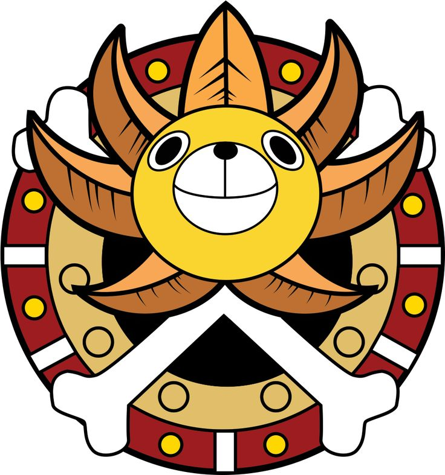

<!doctype html>
<html lang="en">
<head>
<meta charset="utf-8"><meta name="viewport" content="width=device-width,initial-scale=1"><meta name="theme-color" content="#f5f4ef">
<title>Sunny — ECE Interview Practice</title>
<style>
@import url('https://fonts.googleapis.com/css2?family=DM+Mono:wght@400;500&family=DM+Sans:wght@400;500;600;700&family=Manrope:wght@400;500;600;700;800&display=swap');
:root{--paper:#f5f4ef;--white:#fffefa;--ink:#202521;--muted:#777b73;--line:#e7e5dc;--green:#365a49;--green2:#e4eee7;--orange:#dc764a;--orange2:#f9e9df;--yellow:#f1c65b;--blue:#dfe9f2;--radius:14px;--shadow:0 10px 30px #22220f0b}*{box-sizing:border-box}body{margin:0;background:var(--paper);font-family:'DM Sans',sans-serif;color:var(--ink)}button,input,textarea,select{font:inherit}button{cursor:pointer}#app{min-height:100vh}.shell{max-width:1320px;margin:0 auto;padding:0 42px}.topbar{height:76px;display:flex;align-items:center;justify-content:space-between;border-bottom:1px solid var(--line);position:sticky;top:0;background:#f5f4efed;backdrop-filter:blur(10px);z-index:4}.brand{display:flex;align-items:center;gap:11px;font:800 17px Manrope,sans-serif;letter-spacing:-.6px}.brand-mark{width:36px;height:36px;border-radius:50%;object-fit:cover;display:block}.brand em{font-style:normal;color:var(--green)}.top-right{display:flex;align-items:center;gap:20px}.date{font:11px 'DM Mono';color:var(--muted);letter-spacing:.6px}.avatar{width:34px;height:34px;border-radius:50%;background:#ecdcc9;display:grid;place-items:center;color:#694630;font:700 11px Manrope}.content{padding:43px 0 80px}.eyebrow{font:11px 'DM Mono';letter-spacing:1.6px;text-transform:uppercase;color:var(--green)}h1,h2,h3,p{margin-top:0}h1{font:600 clamp(30px,4vw,48px)/1.12 Manrope,sans-serif;letter-spacing:-2px;margin:13px 0 12px}.intro{color:var(--muted);font-size:15px;margin:0;line-height:1.65}.hero-row{display:flex;align-items:flex-end;justify-content:space-between;margin-bottom:31px;gap:24px}.primary{border:0;background:var(--green);color:white;padding:13px 18px;border-radius:9px;font-weight:600;font-size:13px;display:inline-flex;align-items:center;gap:10px;box-shadow:0 3px 10px #365a4922;transition:.2s}.primary:hover{background:#294b3a;transform:translateY(-1px)}.icon{font-size:18px;line-height:1}.stats{display:grid;grid-template-columns:repeat(3,1fr);gap:14px;margin:0 0 38px}.stat{background:var(--white);border:1px solid var(--line);border-radius:12px;padding:19px 21px;display:flex;align-items:center;gap:14px}.stat-icon{width:38px;height:38px;border-radius:10px;background:var(--green2);display:grid;place-items:center;font-size:16px}.stat:nth-child(2) .stat-icon{background:var(--orange2)}.stat:nth-child(3) .stat-icon{background:#f7efda}.stat-number{font:700 23px Manrope;letter-spacing:-1px}.stat-label{font-size:11px;color:var(--muted);margin-top:2px}.section-head{display:flex;align-items:center;justify-content:space-between;margin-bottom:14px}.section-head h2{font:700 16px Manrope;margin:0;letter-spacing:-.3px}.section-head span{font:11px 'DM Mono';color:var(--muted)}.cards{display:grid;grid-template-columns:repeat(3,1fr);gap:15px}.topic{background:var(--white);border:1px solid var(--line);border-radius:var(--radius);padding:20px 21px 17px;transition:.2s;cursor:pointer;position:relative;overflow:hidden;min-height:170px}.topic:hover{transform:translateY(-3px);box-shadow:var(--shadow);border-color:#d1d9d0}.topic-top{display:flex;justify-content:space-between;align-items:flex-start}.topic-icon{width:42px;height:42px;border-radius:11px;background:var(--green2);display:grid;place-items:center;font-size:20px}.topic:nth-child(3n+2) .topic-icon{background:var(--orange2)}.topic:nth-child(3n) .topic-icon{background:var(--blue)}.arrow{color:#a8aaa1;font-size:17px}.topic h3{font:700 15px Manrope;margin:17px 0 5px;letter-spacing:-.3px}.topic-meta{font-size:12px;color:var(--muted)}.topic-bottom{display:flex;align-items:center;gap:10px;margin-top:16px}.progress{height:4px;background:#eeede6;border-radius:10px;flex:1;overflow:hidden}.progress i{display:block;height:100%;background:var(--green);border-radius:10px}.percent{font:10px 'DM Mono';color:#81847b}.add-topic{background:transparent;border:1px dashed #cbc9bf;border-radius:var(--radius);min-height:170px;color:var(--muted);display:flex;flex-direction:column;align-items:center;justify-content:center;gap:9px;transition:.2s}.add-topic:hover{border-color:var(--green);color:var(--green);background:#f8faf7}.add-circle{width:34px;height:34px;border:1px solid var(--line);border-radius:50%;display:grid;place-items:center;font-size:20px;font-weight:300}.add-topic span:last-child{font-size:12px;font-weight:600}.footer-note{margin-top:35px;padding:17px 20px;border-radius:11px;background:#ecebe3;display:flex;gap:12px;align-items:flex-start;color:#65685f;font-size:12px;line-height:1.6}.footer-note b{color:#343a33}.practice-top{display:flex;align-items:center;justify-content:space-between;padding-top:32px;margin-bottom:37px}.back{border:0;background:none;color:var(--muted);font-size:13px;padding:7px 0;display:flex;align-items:center;gap:8px}.back:hover{color:var(--ink)}.topic-title{display:flex;gap:14px;align-items:center}.topic-title .topic-icon{width:48px;height:48px}.topic-title h1{font-size:28px;margin:0;letter-spacing:-1px}.topic-title p{font-size:12px;color:var(--muted);margin:4px 0 0}.practice-layout{display:grid;grid-template-columns:minmax(0,1fr) 280px;gap:22px;align-items:start}.question-card{background:var(--white);border:1px solid var(--line);border-radius:16px;padding:30px 34px;min-height:380px;box-shadow:var(--shadow)}.q-meta{display:flex;justify-content:space-between;align-items:center;margin-bottom:23px}.q-count{font:11px 'DM Mono';color:var(--muted)}.tag{padding:5px 9px;border-radius:20px;background:var(--green2);color:var(--green);font:10px 'DM Mono';letter-spacing:.3px}.question{font:600 clamp(20px,2.6vw,27px)/1.4 Manrope;letter-spacing:-.7px;max-width:750px;margin-bottom:27px}.answer-label{font:10px 'DM Mono';letter-spacing:1.3px;text-transform:uppercase;color:var(--muted);margin-bottom:10px}.answer{font-size:14px;line-height:1.8;color:#555a53;padding:16px 18px;border-left:2px solid #d8d6cd;background:#f7f6f1;border-radius:0 9px 9px 0;white-space:pre-wrap}.answer.hidden{filter:blur(5px);user-select:none;color:#a9aaa2;min-height:60px}.card-actions{display:flex;gap:10px;flex-wrap:wrap;margin-top:24px}.secondary,.rating-btn{border:1px solid var(--line);background:var(--white);color:#4b514a;padding:10px 13px;border-radius:8px;font-size:12px;font-weight:600;transition:.15s}.secondary:hover,.rating-btn:hover{border-color:#b8c8bb;color:var(--green)}.secondary.primary-lite{background:var(--green2);border-color:var(--green2);color:var(--green)}.side-panel{display:flex;flex-direction:column;gap:13px}.side-box{background:var(--white);border:1px solid var(--line);border-radius:13px;padding:19px}.side-box h3{font:700 12px Manrope;margin:0 0 14px}.progress-big{font:700 28px Manrope;letter-spacing:-1px}.progress-caption{font-size:11px;color:var(--muted);margin-top:2px}.side-progress{height:5px;background:#eeede6;border-radius:5px;margin-top:13px}.side-progress i{display:block;height:100%;background:var(--green);border-radius:5px}.rating-list{display:flex;flex-direction:column;gap:7px}.rating-btn{padding:9px 10px;text-align:left;display:flex;justify-content:space-between;align-items:center;font-weight:500}.rating-btn.active{border-color:#8ca894;background:#edf4ee;color:var(--green)}.rating-btn small{font-size:10px;color:#8b8d85}.side-tip{background:#f4eddc;border:0;color:#665938;font-size:11px;line-height:1.6}.side-tip strong{display:block;margin-bottom:4px;color:#514628}.list-head{display:flex;justify-content:space-between;align-items:center;margin:30px 0 12px}.list-head h2{font:700 14px Manrope;margin:0}.add-small{border:0;background:transparent;color:var(--green);font-size:12px;font-weight:700;padding:6px}.question-list{border:1px solid var(--line);border-radius:12px;background:var(--white);overflow:hidden}.question-row{padding:15px 18px;display:flex;align-items:center;gap:13px;border-bottom:1px solid var(--line);cursor:pointer}.question-row:last-child{border-bottom:0}.question-row:hover{background:#faf9f5}.q-dot{width:8px;height:8px;border-radius:50%;background:#d5d4ca;flex:none}.q-dot.good{background:#5b9c70}.q-dot.again{background:var(--orange)}.row-text{font-size:12px;flex:1;line-height:1.5}.row-tag{font:9px 'DM Mono';color:#8a8c84}.empty{padding:28px;text-align:center;color:var(--muted);font-size:13px}.modal-backdrop{position:fixed;inset:0;background:#1c231dd0;z-index:10;display:grid;place-items:center;padding:20px;backdrop-filter:blur(3px)}.modal{width:min(520px,100%);border-radius:15px;background:var(--white);padding:26px;box-shadow:0 20px 80px #0003}.modal-head{display:flex;justify-content:space-between;align-items:center;margin-bottom:20px}.modal-head h2{font:700 19px Manrope;margin:0}.close{background:none;border:0;color:#85877f;font-size:22px}.field{display:flex;flex-direction:column;gap:7px;margin:14px 0}.field label{font:10px 'DM Mono';text-transform:uppercase;letter-spacing:1px;color:#686d65}.field input,.field textarea,.field select{width:100%;border:1px solid #dfded5;border-radius:8px;background:#fff;padding:11px 12px;font-size:13px;outline:0;color:var(--ink)}.field input:focus,.field textarea:focus,.field select:focus{border-color:#77927f;box-shadow:0 0 0 3px #365a4912}.field textarea{resize:vertical;min-height:100px;line-height:1.55}.form-actions{display:flex;justify-content:flex-end;gap:9px;margin-top:22px}.cancel{border:0;background:none;color:var(--muted);padding:10px 13px;font-size:12px}.toast{position:fixed;bottom:22px;left:50%;transform:translate(-50%,20px);background:#26372c;color:#fff;padding:11px 17px;border-radius:9px;font-size:12px;opacity:0;transition:.25s;z-index:20;pointer-events:none}.toast.show{opacity:1;transform:translate(-50%,0)}
@media(max-width:800px){.shell{padding:0 23px}.cards{grid-template-columns:repeat(2,1fr)}.practice-layout{grid-template-columns:1fr}.side-panel{display:grid;grid-template-columns:repeat(2,1fr)}.side-tip{grid-column:1/-1}.question-card{padding:25px}.practice-top{align-items:flex-start;gap:15px;flex-direction:column}.topbar{height:66px}.date{display:none}}
@media(max-width:540px){.shell{padding:0 17px}.content{padding-top:31px}.hero-row{align-items:flex-start;flex-direction:column}.hero-row .primary{width:100%;justify-content:center}.stats{gap:8px}.stat{padding:13px 10px;gap:8px;align-items:flex-start;flex-direction:column}.stat-icon{width:30px;height:30px;font-size:14px}.stat-number{font-size:20px}.stat-label{font-size:10px}.cards{grid-template-columns:1fr}.topic{min-height:155px}.add-topic{min-height:100px}.question-card{padding:21px}.side-panel{grid-template-columns:1fr 1fr}.top-right{gap:10px}}

.voice-controls{display:flex;align-items:center;gap:10px;margin-top:8px}.voice-button{padding:8px 11px}.voice-button.listening{background:#fff0e9;border-color:#e9b8a2;color:#a64d2c}.voice-status{font-size:11px;color:var(--muted);min-height:16px}.voice-status.error{color:#a64d2c}
.queue-tabs{display:flex;gap:8px;border-bottom:1px solid var(--line);margin:0 0 22px}.queue-tab{border:0;background:transparent;color:var(--muted);padding:11px 15px;font-weight:700;font-size:13px;border-bottom:2px solid transparent}.queue-tab.active{color:var(--green);border-color:var(--green)}.queue-tab span{display:inline-grid;place-items:center;min-width:22px;height:22px;padding:0 6px;margin-left:5px;border-radius:12px;background:#ebeae2;font:10px 'DM Mono';color:inherit}.queue-tab.active span{background:var(--green2)}.question-row.selected{background:#f2f5f0}.row-star{border:0;background:transparent;color:#a5a69d;font-size:18px;line-height:1;padding:3px}.row-star.starred,.star-active{color:#b88618!important}.due-now{color:#b34b32!important}.due-later{color:#777b73}.revision-actions{display:flex;flex-direction:column;gap:7px}.star-active{background:#fbf4df!important;border-color:#ead9a8!important}.stats{grid-template-columns:repeat(4,1fr)}
@media(max-width:800px){.stats{grid-template-columns:repeat(2,1fr)}}


.roadmap-shortcut{display:flex;justify-content:flex-end;margin:-9px 0 20px}.roadmap-page{padding-top:28px}.roadmap-heading{display:flex;justify-content:space-between;align-items:flex-end;gap:20px;margin-bottom:20px}.roadmap-heading h1{font-size:clamp(27px,3.5vw,38px);margin:8px 0}.roadmap-heading .back{margin-bottom:20px}.roadmap-tools{display:flex;gap:8px;align-items:center}.roadmap-tools .secondary{min-width:40px}.roadmap-viewport{height:min(74vh,800px);min-height:460px;overflow:auto;border:0;background:transparent;cursor:grab;overscroll-behavior:contain}.roadmap-canvas{width:max-content;min-width:max-content;min-height:100%;padding:52px 100px 70px;transform-origin:center center;transition:transform .2s ease}.radial-map{position:relative;display:grid;grid-template-columns:max-content 230px max-content;align-items:stretch;width:max-content;min-height:540px;margin:0 auto}.radial-side{display:flex;flex-direction:column;justify-content:space-around;gap:34px;min-height:540px}.radial-side-left{align-items:flex-end}.radial-side-right{align-items:flex-start}.radial-branch{position:relative;z-index:1;display:flex;align-items:center;gap:22px;width:max-content;max-width:none}.radial-left-branch{flex-direction:row-reverse}.radial-right-branch{flex-direction:row}.radial-major-node,.radial-root{position:relative;z-index:2;flex:none;width:144px;height:144px;border-radius:50%;border:2px solid var(--green);background:#f5f8f5;color:var(--green);display:flex;flex-direction:column;align-items:center;justify-content:center;gap:6px;padding:14px;text-align:center;white-space:normal;font:700 13px/1.3 Manrope,sans-serif;cursor:pointer;box-shadow:0 5px 18px #20252110;transition:transform .18s,background .18s,border-color .18s}.radial-major-node:hover{transform:scale(1.04);background:#e8f0e9}.radial-topic-number{font:600 10px 'DM Mono';opacity:.72}.radial-sequential .radial-topic-number{color:#936b13}.radial-major-toggle{display:grid;place-items:center;width:20px;height:20px;border-radius:50%;background:var(--green2);font:500 14px 'DM Mono'}.radial-root{width:190px;height:190px;background:var(--green);color:white;border-color:var(--green);font-size:15px;letter-spacing:1px;box-shadow:0 10px 30px #365a4930}.radial-root:hover{transform:scale(1.035);background:#294b3a}.radial-sequential>.radial-major-node{border-color:#c99e32;background:#fff5d9;color:#76580f}.radial-sequential>.radial-major-node:hover{background:#ffedb9}.radial-sequential .radial-major-toggle{background:#f0dda6;color:#76580f}.radial-children{display:grid;grid-template-rows:0fr;transition:grid-template-rows .32s ease;min-width:0}.radial-children.radial-open{grid-template-rows:1fr}.radial-children-inner{min-height:0;overflow:hidden;opacity:0;transition:opacity .24s ease}.radial-children.radial-open>.radial-children-inner{opacity:1}.radial-subtopics{display:flex;flex-direction:column;justify-content:center;gap:11px;width:max-content;min-width:max-content;padding:7px 2px}.radial-subtopic{display:flex;align-items:center;gap:14px;width:max-content;min-height:42px}.radial-left-branch .radial-subtopic{flex-direction:row-reverse}.radial-right-branch .radial-subtopic{flex-direction:row}.radial-subtopic-node{position:relative;z-index:2;display:inline-flex;align-items:center;justify-content:flex-start;gap:9px;width:max-content;min-height:42px;padding:4px 15px 4px 5px;border:1px solid #afc1b2;border-radius:999px;background:var(--white);color:var(--ink);white-space:nowrap;word-break:normal;overflow-wrap:normal;text-align:left;font:500 12px/1.2 'DM Sans',sans-serif;cursor:pointer;transition:background .18s,border-color .18s,transform .18s}.radial-subtopic-node:hover{background:#f0f5f0;border-color:#7e9b84;transform:translateY(-1px)}.radial-number{flex:none;width:30px;height:30px;border-radius:50%;display:grid;place-items:center;background:var(--green2);color:var(--green);font:600 11px 'DM Mono'}.radial-subtopic-label{white-space:nowrap;word-break:normal;overflow-wrap:normal}.radial-subtopic-toggle{margin-left:2px;color:var(--muted);font:13px 'DM Mono'}.radial-sequential .radial-subtopic-node{border-color:#d0ae53;background:#fffaf0}.radial-sequential .radial-subtopic-node:hover{background:#fff1cc;border-color:#b68b25}.radial-sequential .radial-number{background:#f8edca;color:#76580f}.radial-connectors{position:absolute;inset:0;z-index:0;overflow:visible;pointer-events:none}.radial-link{fill:none;stroke:#bdcbbf;stroke-width:1.7;stroke-linecap:round;stroke-linejoin:round;vector-effect:non-scaling-stroke}.radial-link-gold{stroke:#c99e32;stroke-width:2}.radial-center{z-index:1;display:flex;align-items:center;justify-content:center;min-width:230px}.radial-side-left .radial-children{direction:ltr}.radial-side-right .radial-children{direction:ltr}
@media(max-width:700px){.roadmap-heading{align-items:flex-start;flex-direction:column}.roadmap-heading .back{margin-bottom:15px}.roadmap-tools{align-self:flex-end}.roadmap-viewport{height:68vh;min-height:390px}.roadmap-canvas{padding:40px 80px 60px}.radial-map{min-height:480px}.radial-side{min-height:480px;gap:28px}.radial-major-node{width:126px;height:126px;font-size:12px}.radial-root{width:164px;height:164px;font-size:13px}.radial-branch{gap:16px}.radial-subtopics{gap:9px}.radial-subtopic-node{min-height:38px;font-size:11px}.radial-number{width:27px;height:27px}}
.subject-actions{display:flex;align-items:center;gap:9px}.bulk-modal{width:min(720px,100%)}.bulk-help{color:var(--muted);font-size:13px;line-height:1.55;margin:-6px 0 18px}.bulk-paste{min-height:300px!important;font:13px/1.6 'DM Sans',sans-serif!important;white-space:pre-wrap}.subject-actions .secondary,.subject-actions .primary{white-space:nowrap}
@media(max-width:700px){.subject-actions{width:100%;flex-wrap:wrap}.subject-actions>*{flex:1;justify-content:center}.bulk-paste{min-height:240px!important}}
</style></head>
<body><div id="app"></div><div id="modal-root"></div><div id="toast" class="toast"></div>
<script>
const KEY='benchprep_v1';
const roboticsQuestionSet=[{"id":"r-new-01","q":"What is robotics?","a":"Robotics is a branch of engineering that deals with the design, development, programming, and operation of robots. It combines mechanical engineering, electronics, computer science, and control systems to perform tasks automatically."},{"id":"r-new-02","q":"What are the main components of a robot?","a":"The main components of a robot are sensors, actuators, a controller, a power supply, and a mechanical structure. Sensors collect information from the environment, the controller processes it, and actuators perform the required movements."},{"id":"r-new-03","q":"What is the difference between automation and robotics?","a":"Automation is the process of performing tasks with minimal human intervention using machines or control systems. Robotics is a part of automation that specifically involves programmable machines capable of performing physical tasks."},{"id":"r-new-04","q":"What are the different types of robots?","a":"Common types of robots include industrial robots, mobile robots, humanoid robots, collaborative robots (cobots), autonomous robots, medical robots, and service robots."},{"id":"r-new-05","q":"What is a Degree of Freedom (DOF) in robotics?","a":"Degree of Freedom refers to the number of independent movements or parameters required to describe the position and orientation of a robot. For example, a robotic arm with six degrees of freedom can generally control three-dimensional position and three-dimensional orientation."},{"id":"r-new-06","q":"What is the difference between a sensor and an actuator in robotics?","a":"A sensor detects physical parameters such as distance, temperature, light, and position and converts them into electrical signals. An actuator receives control signals and produces physical movement or action. For example, an ultrasonic sensor detects obstacles, while a motor moves the robot."},{"id":"r-new-07","q":"What are the commonly used sensors in robotics?","a":"Common sensors used in robotics include ultrasonic sensors for distance measurement, IR sensors for obstacle detection, encoders for measuring motor rotation, gyroscopes for angular velocity, accelerometers for acceleration, and cameras for visual detection."},{"id":"r-new-08","q":"What is an IR sensor and where is it used?","a":"An IR sensor uses infrared light to detect nearby objects or surfaces. It is commonly used in line-following robots, obstacle detection, object detection, and automatic switching applications."},{"id":"r-new-09","q":"What is an encoder in robotics?","a":"An encoder is a sensor used to measure the rotation, speed, or position of a motor. It converts mechanical movement into electrical signals and is commonly used in wheel-based robots for speed and position feedback."},{"id":"r-new-10","q":"What is the difference between a DC motor, servo motor, and stepper motor?","a":"A DC motor provides continuous rotation and is commonly used for driving robot wheels. A servo motor provides controlled angular movement and is commonly used for robotic arm movements. A stepper motor moves in fixed angular steps and is used where precise incremental positioning is required."},{"id":"r-new-11","q":"How does an obstacle-avoiding robot work?","a":"An obstacle-avoiding robot uses sensors such as ultrasonic sensors to detect obstacles in its path. The microcontroller processes the distance information and controls the motors through a motor driver to stop, turn, or change direction to avoid the obstacle."},{"id":"r-new-12","q":"What is the role of AI in robotics?","a":"Artificial Intelligence helps robots understand their environment, recognize objects, make decisions, and perform complex tasks. It is commonly used in computer vision, autonomous navigation, object detection, and intelligent robotic systems."}];
const embeddedQuestionSet=[{"id":"e-new-01","q":"What is an embedded system?","a":"An embedded system is a combination of hardware and software designed to perform a specific task. It generally consists of a microcontroller or microprocessor, memory, and input/output devices. Examples include washing machines, smart TVs, traffic control systems, and medical devices."},{"id":"e-new-02","q":"What is a microcontroller?","a":"A microcontroller is a compact chip that contains a CPU, memory, and input/output peripherals, all integrated into a single chip. It is mainly used to control specific hardware tasks. Examples include Arduino-based ATmega328P and 8051 microcontrollers."},{"id":"e-new-03","q":"What are the main components of an embedded system?","a":"The main components of an embedded system are a processor or microcontroller, memory, input/output interfaces, sensors, actuators, and embedded software. These components work together to perform a specific task."},{"id":"e-new-04","q":"Which programming language is commonly used in embedded systems?","a":"C is one of the most commonly used programming languages in embedded systems because it is efficient and allows direct interaction with hardware, memory, and microcontroller peripherals. C++ is also used for developing complex embedded applications."},{"id":"e-new-05","q":"Which language do you prefer for embedded systems: C or C++?","a":"I prefer C for low-level embedded programming because it provides better control over hardware registers, memory, and peripherals with less overhead. However, C++ is useful for larger and more complex projects because it supports object-oriented programming, code reusability, and modular design."},{"id":"e-new-06","q":"What is the difference between a microprocessor and a microcontroller?","a":"A microprocessor mainly contains a CPU and requires external memory and peripherals to build a complete system. A microcontroller integrates the CPU, memory, and input/output peripherals into a single chip. Microprocessors are commonly used in computers, whereas microcontrollers are used in embedded applications."},{"id":"e-new-07","q":"What is the difference between an embedded system and a general-purpose computer?","a":"An embedded system is designed to perform a specific task with limited hardware and resources. A general-purpose computer can perform multiple tasks and run different applications. Embedded systems are commonly used in appliances, automotive systems, and industrial control systems."},{"id":"e-new-08","q":"What is the difference between a real-time system and an embedded system?","a":"An embedded system is designed to perform a specific function using dedicated hardware and software. A real-time system is designed to produce results within a specified time limit. A real-time system can be an embedded system, but not all embedded systems are real-time systems. In real-time systems, timing is critical."},{"id":"e-new-09","q":"What are the different types of memory used in microcontrollers?","a":"Memory in microcontrollers is mainly divided into two categories: volatile and non-volatile memory.\n\n- Volatile Memory: It requires power to retain data. Examples include SRAM and DRAM.\n- Non-Volatile Memory: It retains data even when power is switched off. Examples include Flash, EEPROM, and ROM."},{"id":"e-new-10","q":"What is the difference between RAM and Flash memory?","a":"RAM is volatile memory used for temporary data storage during program execution. Its data is lost when the power is switched off. Flash memory is non-volatile memory used to store program code and permanent data. It retains information even after the power is switched off."},{"id":"e-new-11","q":"Why do we prefer Flash memory in microcontrollers?","a":"Flash memory is non-volatile, which means it retains data even when the power is switched off. It is electrically programmable and erasable, making it suitable for storing firmware and program instructions in microcontrollers."},{"id":"e-new-12","q":"What is the difference between pull-up and pull-down resistors?","a":"A pull-up resistor connects an input pin to the supply voltage and maintains a default HIGH state. A pull-down resistor connects an input pin to ground and maintains a default LOW state. Both prevent the input pin from floating and producing unpredictable readings due to electrical noise."},{"id":"e-new-13","q":"What is a floating input pin?","a":"A floating input pin is a microcontroller input that is not connected to a defined HIGH or LOW logic level. Its voltage can change due to electrical noise, resulting in unpredictable readings. Pull-up or pull-down resistors are used to prevent this condition."},{"id":"e-new-14","q":"What is GPIO?","a":"GPIO stands for General Purpose Input/Output. These are programmable pins of a microcontroller that can be configured as input or output. They are used to interface external devices such as LEDs, switches, sensors, and relays."},{"id":"e-new-15","q":"What is the difference between analog and digital input?","a":"A digital input reads only two logical states, HIGH or LOW, generally represented by 1 and 0. An analog input measures a continuously varying voltage within a specified range using an ADC. Digital inputs are used for switches, while analog inputs are used for sensors such as temperature and light sensors."},{"id":"e-new-16","q":"What is ADC in a microcontroller?","a":"ADC stands for Analog-to-Digital Converter. It converts analog voltage signals into digital values that a microcontroller can process. It is commonly used to read analog sensors such as temperature, light, and pressure sensors."},{"id":"e-new-17","q":"What is PWM in embedded systems?","a":"PWM stands for Pulse Width Modulation. It is a technique used to control the average power delivered to a device by changing the duty cycle of a digital signal. It is commonly used to control LED brightness and motor speed."},{"id":"e-new-18","q":"What is an interrupt in a microcontroller?","a":"An interrupt is a mechanism that temporarily stops the normal execution of a program to handle an important event. The microcontroller executes a special function called an Interrupt Service Routine (ISR) and then returns to its previous task. Interrupts are commonly used for button presses, timers, and communication events."},{"id":"e-new-19","q":"When do we use polling and interrupts?","a":"Polling is used when the microcontroller continuously checks the status of a device or event. Interrupts are used when the microcontroller needs to respond automatically to an event or signal. Polling is suitable for simple tasks, whereas interrupts are more efficient for handling important or time-sensitive events."},{"id":"e-new-20","q":"What is the difference between polling and interrupts?","a":"In polling, the microcontroller continuously checks the status of a device or event. In interrupts, the microcontroller is notified automatically when a particular event occurs. Interrupts generally improve CPU efficiency because they avoid continuous checking."},{"id":"e-new-21","q":"What is a timer in a microcontroller?","a":"A timer is a hardware peripheral used to measure time intervals, generate delays, and produce periodic events. It is commonly used for generating PWM signals, scheduling tasks, and measuring the frequency of external signals."},{"id":"e-new-22","q":"What is UART communication?","a":"UART stands for Universal Asynchronous Receiver-Transmitter. It is a serial communication protocol used to transfer data between two devices. It generally uses two communication lines: TX for transmitting data and RX for receiving data. Both devices must use the same baud rate."},{"id":"e-new-23","q":"What is I2C communication?","a":"I2C stands for Inter-Integrated Circuit. It is a synchronous serial communication protocol that uses two wires: SDA for data and SCL for clock. It supports communication between multiple devices using unique addresses."},{"id":"e-new-24","q":"What is SPI communication?","a":"SPI stands for Serial Peripheral Interface. It is a synchronous serial communication protocol commonly used for high-speed data transfer between a microcontroller and peripheral devices. It generally uses four lines: MOSI, MISO, SCLK, and SS or CS."},{"id":"e-new-25","q":"What is CAN communication?","a":"CAN stands for Controller Area Network. It is a robust serial communication protocol used to communicate between multiple electronic control units (ECUs) without requiring a central computer. It is commonly used in automobiles and industrial automation."},{"id":"e-new-26","q":"What types of communication protocols have you used in your embedded projects, and why?","a":"I have worked with different communication protocols depending on the application.\n\n- UART: For serial communication between microcontrollers and computers or other modules.\n- I2C: For connecting sensors and peripheral devices using two communication lines.\n- SPI: For high-speed communication with displays, memory, and other peripherals.\n- CAN: For reliable communication between multiple controllers, especially in automotive applications.\n- Wi-Fi: For wireless communication and internet connectivity in ESP32-based IoT projects.\n- Bluetooth: For short-range wireless communication between devices.\n- MQTT: For lightweight message exchange between IoT devices and servers.\n- UDP: For fast, connectionless data communication.\n- CoAP: For lightweight communication in resource-constrained IoT devices."},{"id":"e-new-27","q":"What is the difference between UART, I2C, and SPI?","a":"UART is an asynchronous communication protocol that generally uses TX and RX lines. I2C is a synchronous protocol that uses two wires, SDA and SCL, and supports multiple addressed devices. SPI is also synchronous but generally uses four lines and offers high-speed data transfer."},{"id":"e-new-28","q":"What is an RTOS?","a":"RTOS stands for Real-Time Operating System. It is an operating system designed to manage tasks and provide predictable responses within specific timing constraints. It is commonly used in automotive systems, robotics, industrial automation, and medical devices."},{"id":"e-new-29","q":"What is the difference between RTOS and a normal operating system?","a":"A normal operating system focuses on overall performance, resource management, and user experience. An RTOS focuses on predictable task execution and meeting timing deadlines. It is commonly used in time-critical embedded applications."},{"id":"e-new-30","q":"What is a task in RTOS?","a":"A task is an independent unit of execution in an RTOS. Each task performs a specific function, such as reading sensor data, processing information, or controlling a motor. The RTOS scheduler manages the execution of these tasks."},{"id":"e-new-31","q":"What is task scheduling in RTOS?","a":"Task scheduling is the process of deciding which task should execute at a particular time. The RTOS scheduler manages tasks based on their priority, execution state, and scheduling policy to ensure timely execution."},{"id":"e-new-32","q":"What is the difference between a semaphore and a mutex?","a":"A semaphore is a synchronization mechanism used to manage access to shared resources or signal events between tasks. A mutex is used to protect shared resources by allowing only one task at a time to access them. A mutex generally has ownership, whereas a semaphore does not."},{"id":"e-new-33","q":"What is a watchdog timer?","a":"A watchdog timer is a hardware timer used to detect and recover from software failures. If the program does not reset the watchdog timer within a specified time, the watchdog triggers a system reset. It helps improve the reliability of embedded systems."},{"id":"e-new-34","q":"What is firmware?","a":"Firmware is a type of software stored in non-volatile memory that controls the operation of an embedded device. It provides instructions to the hardware to perform specific functions."},{"id":"e-new-35","q":"What is Embedded C?","a":"Embedded C is an extension of the C programming language used for programming microcontrollers and embedded systems. It provides features to interact directly with hardware registers, memory, and peripherals. It is commonly used because it is efficient and suitable for resource-constrained devices."},{"id":"e-new-36","q":"What is the difference between volatile and const keywords in Embedded C?","a":"The volatile keyword tells the compiler that a variable's value can change unexpectedly, such as through hardware registers or interrupts. The const keyword indicates that a variable should not be modified by the program after initialization."},{"id":"e-new-37","q":"What is sensor interfacing?","a":"Sensor interfacing is the process of connecting sensors to a microcontroller to collect physical information such as temperature, pressure, light, and humidity. The microcontroller processes the sensor data and performs the required operation."},{"id":"e-new-38","q":"What is an actuator?","a":"An actuator is an output device that converts an electrical control signal into physical action. Examples include DC motors, servo motors, stepper motors, and relays."},{"id":"e-new-39","q":"What is IoT?","a":"IoT stands for Internet of Things. It is a network of physical devices connected through the internet or other networks to collect, exchange, and process data. Examples include smart home systems, wearable health monitors, and industrial monitoring systems."},{"id":"e-new-40","q":"What is the difference between a sensor and an actuator?","a":"A sensor detects physical parameters such as temperature, light, and pressure and converts them into electrical signals. An actuator receives electrical signals and performs physical actions such as rotating a motor or switching a relay."},{"id":"e-new-41","q":"What software and tools do you use for embedded system projects?","a":"I have worked with different software and development tools depending on the project. Some of them include:\n\n- Arduino IDE: For programming Arduino and ESP32 boards.\n- STM32CubeIDE: For STM32 microcontroller development and debugging.\n- MATLAB: For simulation, signal processing, and analysis.\n- Tinkercad: For basic circuit design and simulation.\n- Proteus: For electronic circuit simulation.\n- VS Code: For code development and project management.\n- ThingSpeak: For collecting, visualizing, and monitoring IoT sensor data."},{"id":"e-new-42","q":"Can you explain the general steps involved in developing an embedded system project?","a":"First, we identify the project requirements and select the appropriate microcontroller and hardware components. Then, we interface the sensors and actuators, write the embedded software, and test the system. Finally, we debug the program, verify its functionality, and implement the complete system."},{"id":"e-new-43","q":"How do you debug an embedded system?","a":"I use serial communication, debugging tools, and hardware testing to identify errors. I check sensor readings, GPIO signals, power supply connections, and communication interfaces. I also use breakpoints and variable monitoring when supported by the development environment."},{"id":"e-new-44","q":"What is real-time processing in embedded systems?","a":"Real-time processing means processing data and responding to events within a specified time limit. It is important in applications such as automotive braking systems, industrial control, and medical monitoring."},{"id":"e-new-45","q":"What is debouncing in embedded systems?","a":"Debouncing is a technique used to eliminate unwanted multiple signals generated when a mechanical switch is pressed or released. It can be implemented using hardware or software to ensure that one button press is detected as a single event."},{"id":"e-new-46","q":"What is the difference between a stepper motor and a servo motor?","a":"A stepper motor moves in fixed angular steps and is generally controlled without feedback in open-loop applications. A servo motor uses a feedback mechanism to control its position, speed, or torque accurately. Stepper motors are commonly used in 3D printers, while servo motors are used in robotics and automation."},{"id":"e-new-47","q":"What is the purpose of a bootloader in a microcontroller?","a":"A bootloader is a small program that runs when a microcontroller starts. It helps load or update the main application firmware and can support programming through interfaces such as UART, USB, or other communication protocols."},{"id":"e-new-48","q":"What is the difference between polling and DMA?","a":"In polling, the CPU continuously checks whether a peripheral is ready for data transfer. DMA stands for Direct Memory Access and allows peripherals to transfer data directly to or from memory without continuous CPU involvement. DMA improves efficiency, especially during large data transfers."}];
const analogQuestionSet=[{"id":"a-new-01","q":"What is the reverse recovery time of a diode?","a":"Reverse recovery time is the time taken by a diode to switch from forward bias to reverse bias and stop conducting current. During this time, a small delay occurs because the stored charge inside the diode needs to be removed. This delay can cause switching losses and reduce performance in high-frequency applications."},{"id":"a-new-02","q":"What is the difference between a Schottky diode and a regular PN junction diode?","a":"A Schottky diode is made using a metal-semiconductor junction, whereas a regular PN junction diode is made using P-type and N-type semiconductor materials. A Schottky diode has a lower forward voltage drop, approximately 0.2–0.3 V, compared to around 0.7 V for a silicon PN junction diode. It also has a very low reverse recovery time, making it suitable for high-speed switching applications."},{"id":"a-new-03","q":"What is analog electronics?","a":"Analog electronics deals with continuous signals that can have different voltage or current values over time. It is used in circuits such as amplifiers, filters, oscillators, and power supplies."},{"id":"a-new-04","q":"What is the difference between analog and digital electronics?","a":"Analog electronics works with continuous signals, where voltage or current can have different values over time. Digital electronics works with discrete signals, usually represented by binary values 0 and 1. Analog circuits are commonly used in microphones and sensors, whereas digital circuits are used in computers and microcontrollers."},{"id":"a-new-05","q":"What is a diode?","a":"A diode is a simple two-terminal semiconductor device whose main function is to allow current to flow in only one direction, from anode to cathode, and block it in the opposite direction."},{"id":"a-new-06","q":"Can you explain the V-I characteristics of a diode?","a":"The V-I characteristics describe the relationship between voltage and current in a diode. In forward bias, the current increases slowly until the threshold voltage is reached, after which it increases sharply. In reverse bias, only a very small leakage current flows. When the reverse breakdown voltage is reached, the reverse current increases suddenly."},{"id":"a-new-07","q":"What is forward voltage, and how does it affect the performance of a diode?","a":"Forward voltage is the voltage required across a diode to make it conduct significantly. It is approximately 0.7 V for a silicon diode and 0.3 V for a germanium diode. Below this voltage, the current is very small. Once the forward voltage is reached, the diode starts conducting significantly."},{"id":"a-new-08","q":"How many types of diodes are there?","a":"There are several types of diodes used in electronics. Some common types are:\n- PN Junction Diode\n- Zener Diode\n- LED (Light Emitting Diode)\n- Schottky Diode\n- Photodiode\n- Varactor Diode\n- Laser Diode"},{"id":"a-new-09","q":"What is the difference between a Zener diode and a regular diode?","a":"A regular PN junction diode is mainly designed to operate in forward bias. If its reverse breakdown voltage is exceeded, it may get damaged due to excessive current.\n\nA Zener diode is specially designed to operate safely in the reverse breakdown region. It maintains an almost constant voltage across its terminals and is commonly used for voltage regulation."},{"id":"a-new-10","q":"What is a Zener diode and where is it used?","a":"A Zener diode is a special type of diode designed to operate in the reverse breakdown region. It maintains an almost constant voltage across its terminals and is commonly used for voltage regulation and voltage reference applications."},{"id":"a-new-11","q":"Explain the working principle of a PN junction diode.","a":"A PN junction diode is formed by joining P-type and N-type semiconductor materials. A depletion region is formed at the junction. In forward bias, the depletion region becomes smaller and the diode allows current to flow. In reverse bias, the depletion region becomes wider and only a very small leakage current flows."},{"id":"a-new-12","q":"What is a photodiode?","a":"A photodiode is a light-sensitive semiconductor device that is generally operated in reverse bias. When light photons fall on its junction, electron-hole pairs are generated, producing a photocurrent. It is commonly used in light sensors, optical communication, and automatic lighting systems."},{"id":"a-new-13","q":"What is a varactor diode?","a":"A varactor diode is a special type of diode that operates in reverse bias and works as a voltage-controlled capacitor. Its capacitance changes according to the applied reverse voltage. It is commonly used in radio tuning and frequency modulation circuits."},{"id":"a-new-14","q":"What is a tunable capacitor?","a":"A tunable capacitor is a capacitor whose capacitance can be adjusted according to the applied control voltage or mechanical setting. In a varactor diode, capacitance is controlled by changing the reverse bias voltage. It is commonly used in radio and frequency tuning circuits."},{"id":"a-new-15","q":"What is a tunneling diode?","a":"A tunneling diode is a heavily doped PN junction diode that works on the principle of quantum tunneling. It exhibits a negative resistance region, where current decreases as voltage increases. It is commonly used in high-frequency oscillators and switching circuits."},{"id":"a-new-16","q":"What is the difference between a clipper and a clamper circuit?","a":"A clipper circuit removes or limits a particular portion of an input waveform without shifting its remaining waveform level. A clamper circuit shifts the entire waveform upward or downward by adding a DC level without changing its peak-to-peak amplitude."},{"id":"a-new-17","q":"How does temperature affect the performance of a diode?","a":"When the temperature of a diode increases, its forward voltage drop decreases. For a silicon diode, the forward voltage typically decreases by approximately 2 mV per degree Celsius. At the same time, reverse leakage current increases with temperature."},{"id":"a-new-18","q":"What is avalanche breakdown in a diode?","a":"Avalanche breakdown occurs when a diode is subjected to a high reverse voltage. Due to the strong electric field, charge carriers gain high energy and collide with atoms, generating additional electron-hole pairs. This process is called impact ionization and causes a sudden increase in reverse current."},{"id":"a-new-19","q":"What is a transistor and what are its types?","a":"A transistor is a semiconductor device mainly used for signal amplification and switching. There are two main types of transistors:\n\n- BJT (Bipolar Junction Transistor): A current-controlled device.\n- FET (Field Effect Transistor): A voltage-controlled device."},{"id":"a-new-20","q":"Explain the working principle of a BJT.","a":"BJT stands for Bipolar Junction Transistor. It has three terminals: emitter, base, and collector. It works on the principle of controlling a large collector current using a small base current. It is commonly used for amplification and switching applications."},{"id":"a-new-21","q":"Explain the working principle of a FET.","a":"FET stands for Field Effect Transistor. It is a voltage-controlled semiconductor device with three main terminals: gate, source, and drain. The voltage applied to the gate controls the current flowing between the source and drain terminals."},{"id":"a-new-22","q":"What is the difference between NPN and PNP transistors?","a":"An NPN transistor uses electrons as majority charge carriers, whereas a PNP transistor uses holes as majority charge carriers. In an NPN transistor, conventional current flows from collector to emitter during normal active operation. In a PNP transistor, conventional current flows from emitter to collector. Their biasing polarities are opposite."},{"id":"a-new-23","q":"What is a rectifier?","a":"A rectifier is an electronic circuit that converts AC (Alternating Current) into DC (Direct Current) using diodes. The two main types are half-wave rectifiers and full-wave rectifiers."},{"id":"a-new-24","q":"What is a half-wave rectifier?","a":"A half-wave rectifier is a circuit that uses a diode to convert only one half-cycle of an AC input into pulsating DC. The other half-cycle is blocked. It is a simple rectifier but has lower efficiency."},{"id":"a-new-25","q":"What is a full-wave rectifier?","a":"A full-wave rectifier converts both positive and negative half-cycles of an AC input into pulsating DC. It can be designed using two diodes with a centre-tapped transformer or four diodes in a bridge configuration."},{"id":"a-new-26","q":"What is the role of a filter in a rectifier circuit?","a":"The output of a rectifier is pulsating DC. A filter is used to reduce the AC ripples and smooth the output to obtain a more stable DC voltage. Common filters include capacitor filters, inductor filters, RC filters, and LC filters."},{"id":"a-new-27","q":"What is ripple in a rectifier circuit?","a":"Ripple refers to the unwanted AC component present in the DC output of a rectifier. Ideally, DC should have a constant voltage, but rectifier output contains small variations. A filter is used to reduce these ripples and make the output smoother."},{"id":"a-new-28","q":"How does the output of a full-wave rectifier compare with a half-wave rectifier? What are its advantages?","a":"A half-wave rectifier uses only one half-cycle of the AC input, whereas a full-wave rectifier uses both half-cycles. The output frequency of a full-wave rectifier is twice the input AC frequency, and its output is smoother. It also has higher efficiency and lower ripple than a half-wave rectifier."},{"id":"a-new-29","q":"What is an amplifier?","a":"An amplifier is an electronic circuit that increases the amplitude of an input signal without significantly changing its shape. Its main purpose is to convert a weak signal into a stronger signal using energy from an external power supply."},{"id":"a-new-30","q":"What are the important characteristics of an amplifier?","a":"The important characteristics of an amplifier include gain, bandwidth, input impedance, output impedance, and efficiency. These parameters determine how effectively an amplifier can amplify an input signal."},{"id":"a-new-31","q":"What is gain in an amplifier?","a":"Gain is the ratio of the output signal to the input signal. It indicates how much an amplifier increases the strength of a signal. It can be voltage gain, current gain, or power gain."},{"id":"a-new-32","q":"What is bandwidth in an amplifier?","a":"Bandwidth is the range of frequencies over which an amplifier operates effectively. It is the difference between the upper and lower cut-off frequencies of the amplifier."},{"id":"a-new-33","q":"What is the role of a clock in sequential circuitry?","a":"A clock signal is a timing signal used to synchronize sequential circuits such as flip-flops and registers. It ensures that data changes or gets stored at specific clock edges, either rising or falling. Without proper clock synchronization, sequential operations may become unpredictable."},{"id":"a-new-34","q":"What is feedback in an amplifier?","a":"Feedback is a technique in which a portion of the output signal is returned to the input of an amplifier. It is mainly of two types: positive feedback and negative feedback. Negative feedback improves stability, reduces distortion, and controls gain, while positive feedback increases the overall gain and can produce oscillations."},{"id":"a-new-35","q":"What is positive and negative feedback?","a":"In positive feedback, the feedback signal is added to the input signal. It increases the effective gain and is commonly used in oscillator circuits.\n\nIn negative feedback, the feedback signal is subtracted from the input signal. It improves stability, reduces distortion, and provides better control over the amplifier gain."},{"id":"a-new-36","q":"What is a multivibrator?","a":"A multivibrator is an electronic circuit used to generate pulse signals and switching waveforms. It is commonly classified into three types: astable, monostable, and bistable multivibrators."},{"id":"a-new-37","q":"What are the three types of multivibrators?","a":"- Astable Multivibrator: It has no stable state and continuously switches between two states, generating a continuous square wave.\n- Monostable Multivibrator: It has one stable state and produces a single output pulse when triggered.\n- Bistable Multivibrator: It has two stable states and changes its state when an external trigger is applied. It is commonly used in memory and switching circuits."}];
const digitalQuestionSet=[{"id":"d-new-01","q":"How does a basic logic gate work?","a":"A basic logic gate is a digital building block that performs a logical operation on one or more binary inputs. For example, an AND gate gives an output of 1 only when both inputs are 1. By combining different logic gates, we can design complex digital circuits such as adders, multiplexers, and registers."},{"id":"d-new-02","q":"Explain the difference between combinational and sequential circuits.","a":"Sir, the output of a combinational circuit depends only on the current inputs. It does not have memory. Examples include adders, multiplexers, and decoders. On the other hand, the output of a sequential circuit depends on both the current inputs and the previous state. It has memory elements. Examples include flip-flops, counters, and Finite State Machines (FSM)."},{"id":"d-new-03","q":"Can you explain a flip-flop and its role in digital circuits?","a":"Sir, a flip-flop is a basic memory element used in digital circuits. Its output depends on the input, clock signal, and previous state. Its main role is to provide temporary data storage and timing control in digital circuits. The most common types include D, JK, SR, and T flip-flops."},{"id":"d-new-04","q":"What is the purpose of a multiplexer?","a":"Sir, a multiplexer, also called a MUX, is a combinational circuit that selects one input from multiple input lines and sends it to a single output based on the select lines. It does not have memory, and its output depends only on the current input and select-line values."},{"id":"d-new-05","q":"What is the difference between SRAM and DRAM?","a":"Sir, SRAM stands for Static Random Access Memory, and DRAM stands for Dynamic Random Access Memory. Both are types of volatile memory, but their internal working is different. SRAM uses flip-flop-based memory cells to store data. It is faster but more expensive. DRAM stores each bit using a capacitor and a transistor. It is comparatively slower, cheaper, and requires periodic refreshing to retain data."},{"id":"d-new-06","q":"What does a Digital-to-Analog Converter (DAC) do?","a":"A Digital-to-Analog Converter (DAC) is used to convert digital binary values into corresponding analog voltage or current signals. Its main purpose is to convert digital signals into analog signals. For example, in an audio system, a DAC converts digital audio data into an analog signal that can be sent to an amplifier and then to a speaker."},{"id":"d-new-07","q":"What is the purpose of a clock signal in a digital circuit?","a":"A clock signal is a timing pulse that synchronizes all sequential elements of a digital circuit, such as flip-flops. It ensures that data is stored or transferred at the correct time. Without a clock signal, the operation of synchronous sequential circuits would not be properly synchronized."},{"id":"d-new-08","q":"What is a shift register?","a":"A shift register is a sequential circuit that shifts data left or right with each clock pulse. It is mainly used for data storage and data transfer."},{"id":"d-new-09","q":"What does PWM stand for, and what are its applications?","a":"Sir, PWM stands for Pulse Width Modulation. It is a technique used to control the average power delivered to a device by varying the pulse width of a signal. It is commonly used to control the speed of motors and the brightness of LEDs."},{"id":"d-new-10","q":"What is duty cycle?","a":"Duty cycle is the percentage of time a signal remains ON during one complete cycle. For example, a 100% duty cycle means the signal is continuously ON, 50% means it is ON for half the cycle, and 0% means it is completely OFF. In LED applications, it is used to control brightness."},{"id":"d-new-11","q":"Can you explain the difference between a microprocessor and a microcontroller?","a":"Sir, a microprocessor is a general-purpose CPU that mainly performs processing operations. It requires external memory and peripherals to work as a complete system. On the other hand, a microcontroller is an all-in-one chip that contains a CPU, memory, and input/output ports. It is mainly used for specific applications and embedded systems."},{"id":"d-new-12","q":"What is the function of a diode in a circuit?","a":"A diode is a two-terminal semiconductor device that allows current to flow mainly in one direction, from anode to cathode, and blocks current in the opposite direction."},{"id":"d-new-13","q":"Can you explain a four-bit binary counter and where it might be used?","a":"A four-bit binary counter is a sequential circuit that counts from 0 to 15 in binary format. Each time it receives a clock pulse, its output increases by one. Since it uses four bits, it has 16 different states, ranging from 0000 to 1111. It is commonly used in digital clocks, timers, and counting applications."},{"id":"d-new-14","q":"What is a Finite State Machine (FSM)?","a":"A Finite State Machine (FSM) is a sequential circuit that changes its state based on the current input and clock signal. It is used in digital systems for controlling and managing different operations."},{"id":"d-new-15","q":"What is the difference between synchronous and asynchronous counters?","a":"In a synchronous counter, all flip-flops receive the same clock signal and change their states together. In an asynchronous counter, only the first flip-flop receives the external clock signal, while the remaining flip-flops are triggered by the output of the previous flip-flop. Due to this, propagation delay occurs in asynchronous counters."},{"id":"d-new-16","q":"Can you explain how a flip-flop is different from a latch?","a":"A flip-flop stores one bit of data and changes its state only on a clock edge, either rising or falling. A latch also stores one bit of data, but it is level-sensitive. Its output can change when the enable signal is active."},{"id":"d-new-17","q":"Can you explain the truth table and how it is used in digital circuits?","a":"A truth table is a chart that shows the output of a digital circuit for all possible combinations of inputs. It is used to design, analyse, and test digital circuits and verify their logical operations."},{"id":"d-new-18","q":"What is BCD (Binary Coded Decimal), and what are its applications?","a":"BCD stands for Binary Coded Decimal. In this system, each decimal digit from 0 to 9 is represented using a 4-bit binary code. For example, decimal 5 is represented as 0101. It is commonly used in digital clocks, calculators, and digital displays."},{"id":"d-new-19","q":"How are logic gates like AND, OR, and NOT used in digital circuits?","a":"Basic logic gates are digital building blocks that perform logical operations on binary inputs. AND, OR, and NOT gates are used individually or in combination to design complex digital circuits such as adders, multiplexers, and other logic circuits."},{"id":"d-new-20","q":"What is the function of an XOR gate?","a":"An XOR gate gives a HIGH output when its inputs are different, such as 01 or 10. If both inputs are the same, the output is LOW. It is mainly used in binary addition to generate the sum bit, and in parity checking and error detection circuits."},{"id":"d-new-21","q":"What is the difference between DAC and ADC?","a":"DAC stands for Digital-to-Analog Converter, which converts digital signals into analog voltage or current signals. For example, it converts digital audio data into an analog signal that can be sent to a speaker.\n\nADC stands for Analog-to-Digital Converter, which converts analog signals into digital values that a processor or microcontroller can understand. For example, it converts the analog output of a temperature sensor into digital data for processing."},{"id":"d-new-22","q":"What is a differential amplifier?","a":"A differential amplifier is an electronic circuit that amplifies the difference between two input signals. It rejects common noise present in both inputs, providing a clearer and more accurate output. It is commonly used in the input stage of operational amplifiers (Op-Amps)."},{"id":"d-new-23","q":"What is the difference between FIR and IIR filters in DSP?","a":"FIR stands for Finite Impulse Response, and IIR stands for Infinite Impulse Response.\n\nFIR filters have a finite impulse response, are always stable under normal finite-coefficient conditions, and provide linear phase characteristics. However, they generally require more memory and computational resources.\n\nIIR filters have an infinite impulse response because they use feedback. They are computationally efficient, require less memory, and can achieve faster filtering with fewer coefficients. However, their stability must be carefully checked."},{"id":"d-new-24","q":"What is a demultiplexer?","a":"A demultiplexer (DEMUX) is a combinational circuit that takes a single input and distributes it to one of multiple output lines based on the select lines. It performs the opposite operation of a multiplexer."},{"id":"d-new-25","q":"What is a Finite State Machine (FSM)?","a":"A Finite State Machine (FSM) is a sequential logic model that has a finite number of states. It changes from one state to another based on the current input and previous state. It is mainly used in digital control systems. There are two main types: Mealy and Moore machines."},{"id":"d-new-26","q":"What is the difference between Mealy and Moore machines?","a":"In a Mealy machine, the output depends on both the current state and the current input. Therefore, the output can change immediately when the input changes.\n\nIn a Moore machine, the output depends only on the current state. Therefore, the output changes only when the state changes."},{"id":"d-new-27","q":"What is a register in digital electronics?","a":"A register is a sequential circuit made up of a group of flip-flops. It is used to store multiple bits of binary data temporarily. Each flip-flop stores one bit, and together they store a complete binary word."},{"id":"d-new-28","q":"What is an operational amplifier (Op-Amp)?","a":"An operational amplifier is a high-gain differential amplifier that amplifies the voltage difference between two input signals. It has two input terminals: an inverting input and a non-inverting input, along with one output terminal. It is commonly used in amplifiers, filters, comparators, and signal-processing circuits."}];
let activeQueue='study',activeRecognition=null,activeDictationField=null;
let roadmapExpanded=new Set(),roadmapZoom=1,roadmapDrag=null;
const seed=[
{id:'analog',name:'Analog Electronics',icon:'⌁',questions:analogQuestionSet},
{id:'digital',name:'Digital Electronics',icon:'▦',questions:digitalQuestionSet},
{id:'robotics',name:'Robotics',icon:'⌖',questions:roboticsQuestionSet},
{id:'embedded',name:'Embedded C',icon:'⌘',questions:embeddedQuestionSet},
];
function load(){try{const x=JSON.parse(localStorage.getItem(KEY));return x&&Array.isArray(x.topics)?x:{topics:seed,ratings:{},current:{}}}catch{return{topics:seed,ratings:{},current:{}}}}
let db=load(),view='home',activeTopic=null,activeQ=null,shown=false;
const esc=s=>String(s??'').replace(/[&<>"']/g,c=>({'&':'&amp;','<':'&lt;','>':'&gt;','"':'&quot;',"'":'&#39;'}[c]));
function save(){localStorage.setItem(KEY,JSON.stringify(db))}
function stats(){let all=db.topics.flatMap(t=>t.questions),mastered=all.filter(q=>db.ratings[q.id]==='good').length;return{all:all.length,mastered,topics:db.topics.length}}
function shell(inner){return `<div class="shell"><header class="topbar"><div class="brand"><span>Sunny</span></div><div class="top-right"><span class="date">ECE · INTERVIEW PREP</span><span class="avatar">KE</span></div></header>${inner}</div>`}
function home(){view='home';const s=stats();document.getElementById('app').innerHTML=shell(`<main class="content"><div class="hero-row"><div><div class="eyebrow">YOUR PERSONAL PRACTICE SPACE</div><h1>Think clearly.<br>Answer confidently.</h1><p class="intro">A little practice today makes a big difference in the room.<br>Keep your important questions close and your understanding sharp.</p></div><button class="primary" onclick="openQuestion()"><span class="icon">＋</span> Add a question</button></div><div class="stats"><div class="stat"><span class="stat-icon">✎</span><div><div class="stat-number">${s.all}</div><div class="stat-label">Questions saved</div></div></div><div class="stat"><span class="stat-icon">↗</span><div><div class="stat-number">${s.mastered}</div><div class="stat-label">Feeling confident</div></div></div><div class="stat"><span class="stat-icon">▤</span><div><div class="stat-number">${s.topics}</div><div class="stat-label">Practice sections</div></div></div></div><div class="section-head"><h2>Your subjects</h2><span>${s.topics} SECTIONS</span></div><div class="cards">${db.topics.map(t=>{let done=t.questions.filter(q=>db.ratings[q.id]==='good').length,pc=t.questions.length?Math.round(done/t.questions.length*100):0;return `<article class="topic" onclick="openTopic('${t.id}')"><div class="topic-top"><span class="topic-icon">${esc(t.icon||'✳')}</span><span class="arrow">↗</span></div><h3>${esc(t.name)}</h3><div class="topic-meta">${t.questions.length} ${t.questions.length===1?'question':'questions'} · ${done} confident</div><div class="topic-bottom"><div class="progress"><i style="width:${pc}%"></i></div><span class="percent">${pc}%</span></div></article>`}).join('')}<button class="add-topic" onclick="openTopicModal()"><span class="add-circle">＋</span><span>Add a subject</span></button></div><div class="footer-note"><span>✦</span><span><b>Practice tip</b> &nbsp;Try answering out loud before you reveal the notes. Explaining an idea in your own words is the best way to find what you really understand.</span></div></main>`)}
function openTopic(id){activeTopic=db.topics.find(t=>t.id===id);if(!activeTopic)return;let remembered=db.current[id],q=activeTopic.questions.find(x=>x.id===remembered)||activeTopic.questions[0];activeQ=q?.id;shown=false;practice()}
function practice(){if(!activeTopic){home();return}const t=activeTopic;let q=t.questions.find(x=>x.id===activeQ)||t.questions[0];if(!q){document.getElementById('app').innerHTML=shell(`<main class="content"><button class="back" onclick="home()">← &nbsp;All subjects</button><div class="practice-top"><div class="topic-title"><span class="topic-icon">${esc(t.icon||'✳')}</span><div><h1>${esc(t.name)}</h1><p>Build understanding, one question at a time.</p></div></div></div><div class="empty">No questions yet. Add the first one to start practicing.</div><button class="primary" onclick="openQuestion()">＋ Add a question</button></main>`);return}
let idx=t.questions.indexOf(q)+1,good=t.questions.filter(x=>db.ratings[x.id]==='good').length,pc=Math.round(good/t.questions.length*100),rating=db.ratings[q.id];document.getElementById('app').innerHTML=shell(`<main class="content"><div class="practice-top"><button class="back" onclick="home()">← &nbsp;All subjects</button><div class="topic-title"><span class="topic-icon">${esc(t.icon||'✳')}</span><div><h1>${esc(t.name)}</h1><p>Build understanding, one question at a time.</p></div></div><button class="primary" onclick="openQuestion()"><span class="icon">＋</span> Add question</button></div><div class="practice-layout"><section><article class="question-card"><div class="q-meta"><span class="q-count">QUESTION ${idx} OF ${t.questions.length}</span><span class="tag">${rating==='good'?'CONFIDENT':rating==='again'?'REVISIT':'PRACTICE'}</span></div><div class="question">${esc(q.q)}</div><div class="answer-label">A way to think about it</div><div class="answer ${shown?'':'hidden'}">${shown?esc(q.a||'Add an answer from the question editor.'):'Try to answer in your own words first. Your saved explanation is just below.'}</div><div class="card-actions"><button class="secondary primary-lite" onclick="toggleAnswer()">${shown?'Hide answer':'◉ &nbsp; Reveal answer'}</button><button class="secondary" onclick="openQuestion('${q.id}')">✎ &nbsp; Edit question</button><button class="secondary" onclick="deleteQuestion('${q.id}')">Delete</button></div></article><div class="list-head"><h2>Questions in this section</h2><button class="add-small" onclick="openQuestion()">＋ Add question</button></div><div class="question-list">${t.questions.map((x,i)=>`<div class="question-row" onclick="selectQ('${x.id}')"><span class="q-dot ${db.ratings[x.id]||''}"></span><span class="row-text">${esc(x.q)}</span><span class="row-tag">${String(i+1).padStart(2,'0')}</span></div>`).join('')}</div></section><aside class="side-panel"><div class="side-box"><h3>Section progress</h3><div class="progress-big">${pc}%</div><div class="progress-caption">${good} of ${t.questions.length} marked confident</div><div class="side-progress"><i style="width:${pc}%"></i></div></div><div class="side-box"><h3>How did that feel?</h3><div class="rating-list"><button class="rating-btn ${rating==='again'?'active':''}" onclick="rate('again')">↻ &nbsp; Need to revisit <small>Still learning</small></button><button class="rating-btn ${rating==='good'?'active':''}" onclick="rate('good')">✓ &nbsp; I understand it <small>Feels solid</small></button></div></div><div class="side-box side-tip"><strong>Make it yours</strong>Answers are starting points. Add an example, sketch, or real project detail to make each explanation your own.</div></aside></div></main>`)}
function selectQ(id){activeQ=id;db.current[activeTopic.id]=id;shown=false;save();practice()}function toggleAnswer(){shown=!shown;practice()}function rate(value){db.ratings[activeQ]=db.ratings[activeQ]===value?'':value;save();practice();toast(value==='good'?'Nice work — marked confident.':'Saved — you can revisit this one.')}
function openQuestion(id){let q=id?activeTopic?.questions.find(x=>x.id===id):null;let opts=db.topics.map(t=>`<option value="${t.id}" ${t===activeTopic?'selected':''}>${esc(t.name)}</option>`).join('');document.getElementById('modal-root').innerHTML=`<div class="modal-backdrop" onclick="if(event.target===this)closeModal()"><section class="modal"><div class="modal-head"><h2>${q?'Edit question':'Add a question'}</h2><button class="close" onclick="closeModal()">×</button></div><form onsubmit="saveQuestion(event,'${id||''}')"><div class="field"><label>Subject</label><select name="topic" required>${opts}</select></div><div class="field"><label>Question</label><textarea name="question" placeholder="What do you want to be ready to explain?" required>${esc(q?.q||'')}</textarea><div class="voice-controls"><button type="button" id="dictate-question" class="secondary voice-button" onclick="toggleDictation('question')">🎙 Dictate</button><span class="voice-status" id="voice-status-question" aria-live="polite"></span></div></div><div class="field"><label>Your answer / notes</label><textarea name="answer" placeholder="Write a clear explanation in your own words…">${esc(q?.a||'')}</textarea><div class="voice-controls"><button type="button" id="dictate-answer" class="secondary voice-button" onclick="toggleDictation('answer')">🎙 Dictate</button><span class="voice-status" id="voice-status-answer" aria-live="polite"></span></div></div><div class="form-actions"><button type="button" class="cancel" onclick="closeModal()">Cancel</button><button class="primary">Save question</button></div></form></section></div>`}
function saveQuestion(e,id){e.preventDefault();let f=new FormData(e.target),t=db.topics.find(x=>x.id===f.get('topic')),q=t.questions.find(x=>x.id===id);if(q){q.q=f.get('question').trim();q.a=f.get('answer').trim()}else{q={id:'q'+Date.now(),q:f.get('question').trim(),a:f.get('answer').trim(),status:''};t.questions.push(q)}save();closeModal();activeTopic=t;activeQ=q.id;shown=false;practice();toast('Question saved.')}
function openTopicModal(){document.getElementById('modal-root').innerHTML=`<div class="modal-backdrop" onclick="if(event.target===this)closeModal()"><section class="modal"><div class="modal-head"><h2>Add a subject</h2><button class="close" onclick="closeModal()">×</button></div><form onsubmit="saveTopic(event)"><div class="field"><label>Subject name</label><input name="name" placeholder="e.g. Signals & Systems" required maxlength="45"></div><div class="field"><label>Choose an icon</label><select name="icon"><option>✳</option><option>⌁</option><option>▦</option><option>⌖</option><option>⌘</option><option>⚙</option><option>◉</option></select></div><div class="form-actions"><button type="button" class="cancel" onclick="closeModal()">Cancel</button><button class="primary">Create subject</button></div></form></section></div>`}
function saveTopic(e){e.preventDefault();let f=new FormData(e.target),t={id:'t'+Date.now(),name:f.get('name').trim(),icon:f.get('icon'),questions:[]};db.topics.push(t);save();closeModal();home();toast('Subject added.')}

function openBulkQuestionModal(){const opts=db.topics.map(t=>`<option value="${t.id}" ${t===activeTopic?'selected':''}>${esc(t.name)}</option>`).join('');document.getElementById('modal-root').innerHTML=`<div class="modal-backdrop" onclick="if(event.target===this)closeModal()"><section class="modal bulk-modal"><div class="modal-head"><h2>Add multiple questions</h2><button class="close" onclick="closeModal()">×</button></div><p class="bulk-help">Choose a subject, then paste question-and-answer pairs. Start each answer with <b>Answer:</b>. Separate entries with a blank line when possible.</p><form onsubmit="importBulkQuestions(event)"><div class="field"><label>Subject</label><select name="topic" required>${opts}</select></div><div class="field"><label>Questions and answers</label><textarea class="bulk-paste" name="bulkText" placeholder="What is the difference between DAC and ADC?\n\nAnswer: DAC converts digital signals into analog signals.\n\nWhat is a differential amplifier?\n\nAnswer: A differential amplifier amplifies the difference between two input signals." required></textarea></div><div class="form-actions"><button type="button" class="cancel" onclick="closeModal()">Cancel</button><button class="primary">Add questions</button></div></form></section></div>`}
function stripQuestionLabel(text){return text.trim().replace(/^(?:question|q)\s*\d*\s*:\s*/i,'').trim()}
function splitNextBulkQuestion(text){const clean=text.trim();if(!clean)return null;const paragraphs=clean.split(/\n\s*\n/).map(x=>x.trim()).filter(Boolean);if(paragraphs.length>1&&/\?\s*$/.test(paragraphs[paragraphs.length-1]))return{answer:paragraphs.slice(0,-1).join('\n\n').trim(),question:stripQuestionLabel(paragraphs[paragraphs.length-1])};const lastLine=clean.slice(clean.lastIndexOf('\n')+1).trim();if(lastLine.endsWith('?')&&clean.includes('\n'))return{answer:clean.slice(0,clean.lastIndexOf('\n')).trim(),question:stripQuestionLabel(lastLine)};const boundaries=[...clean.matchAll(/[.!?]\s*(?=(?:question\s*\d*\s*:|q\s*:|[A-Z]))/gi)];for(let i=boundaries.length-1;i>=0;i--){const m=boundaries[i],question=stripQuestionLabel(clean.slice(m.index+m[0].length));if(question.endsWith('?')&&question.length<400){return{answer:clean.slice(0,m.index+1).trim(),question}}}return null}
function parseBulkQuestions(text){const source=String(text||'').replace(/\r\n?/g,'\n').trim(),markers=[...source.matchAll(/(?:^|\n)\s*Answer\s*:\s*/gi)];if(!markers.length)throw new Error('Add an “Answer:” line after each question.');let question=stripQuestionLabel(source.slice(0,markers[0].index+markers[0][0].length).replace(/\n\s*Answer\s*:\s*$/i,'')),items=[];for(let i=0;i<markers.length;i++){const answerStart=markers[i].index+markers[i][0].length,end=i+1<markers.length?markers[i+1].index:source.length;let answerText=source.slice(answerStart,end).trim(),nextQuestion='';if(i+1<markers.length){const split=splitNextBulkQuestion(answerText);if(!split)throw new Error(`Could not find the next question before answer ${i+2}. Put each question on its own line and end it with a question mark.`);answerText=split.answer;nextQuestion=split.question}if(!question)throw new Error(`Question ${i+1} is missing.`);if(!answerText)throw new Error(`Answer ${i+1} is empty.`);items.push({q:question,a:answerText});question=nextQuestion}return items}
function importBulkQuestions(event){event.preventDefault();const form=new FormData(event.target),topic=db.topics.find(t=>t.id===form.get('topic'));if(!topic)return;let parsed;try{parsed=parseBulkQuestions(form.get('bulkText'))}catch(error){toast(error.message);return}const stamp=Date.now();parsed.forEach((item,index)=>topic.questions.push({id:`q${stamp}_${index}`,q:item.q,a:item.a,status:'',queue:'study',starred:false,reviewCount:0,studyMisses:0,lastReviewedAt:null,nextReviewAt:null}));save();closeModal();activeTopic=topic;activeQueue='study';activeQ=parsed[0].id;shown=false;practice();toast(`Added ${parsed.length} question${parsed.length===1?'':'s'} to ${topic.name} in Study.`)}

function closeModal(){if(activeRecognition){activeRecognition.abort();activeRecognition=null;activeDictationField=null}document.getElementById('modal-root').innerHTML=''}function toast(s){let x=document.getElementById('toast');x.textContent=s;x.classList.add('show');setTimeout(()=>x.classList.remove('show'),2300)}
function deleteQuestion(id){if(!confirm('Delete this question and its saved progress?'))return;activeTopic.questions=activeTopic.questions.filter(x=>x.id!==id);delete db.ratings[id];if(!activeTopic.questions.length){activeQ=null}else activeQ=activeTopic.questions[0].id;save();shown=false;practice();toast('Question deleted.')}
function mergeSeedQuestions(topic,seedSet,legacyIds=[]){const legacy=new Set(legacyIds),existing=(topic.questions||[]).filter(q=>!legacy.has(q.id)),byId=new Map(existing.map(q=>[q.id,q]));topic.questions=seedSet.map(seed=>{const saved=byId.get(seed.id);return saved?{...saved,...seed}:{...seed}}).concat(existing.filter(q=>!seedSet.some(seed=>seed.id===q.id)))}
function migrateDb(data){
  data.ratings=data.ratings||{};data.current=data.current||{};data.topics=data.topics||[];data.contentVersions=data.contentVersions||{};
  const migrations=[['digital',digitalQuestionSet,['d1','d2','d3']],['analog',analogQuestionSet,['a1','a2','a3']],['embedded',embeddedQuestionSet,['e1','e2','e3']],['robotics',roboticsQuestionSet,['r1','r2','r3']]];
  migrations.forEach(([id,questions,legacyIds])=>{if(data.contentVersions[id]!==2){const topic=data.topics.find(t=>t.id===id);if(topic)mergeSeedQuestions(topic,questions,legacyIds);data.contentVersions[id]=2}});
  if(data.contentVersions.starSelections!==1){const selections={analog:['03','04','05','06','07','08','09','10','11','12','13','16','19','23','24','25','26','29','33','37'].map(n=>'a-new-'+n),digital:['01','02','03','04','05','11','12','15','16','17','22','26','28'].map(n=>'d-new-'+n),robotics:['01','02','06','07','12'].map(n=>'r-new-'+n),embedded:['01','02','03','04','05','06','18','19','20','21','22','23','24','27','30','31','32','33','35','36','40'].map(n=>'e-new-'+n)};Object.entries(selections).forEach(([topicId,ids])=>{const topic=data.topics.find(t=>t.id===topicId);if(topic)(topic.questions||[]).forEach(q=>{if(ids.includes(q.id))q.starred=true})});data.contentVersions.starSelections=1}
  const now=new Date().toISOString();
  if(data.contentVersions.starredRevisionPromotion!==1){data.topics.forEach(t=>(t.questions||[]).forEach(q=>{if(q.starred&&q.queue!=='revision'){q.queue='revision';q.nextReviewAt=q.nextReviewAt||now}}));data.contentVersions.starredRevisionPromotion=1}
  data.topics.forEach(t=>(t.questions||[]).forEach(q=>{
    const old=data.ratings[q.id];
    if(q.queue!=='study'&&q.queue!=='revision')q.queue=old==='good'?'revision':'study';
    q.starred=!!q.starred;
    if(!Number.isInteger(q.reviewCount))q.reviewCount=0;
    if(!Number.isInteger(q.studyMisses))q.studyMisses=old==='again'?1:0;
    if(!('lastReviewedAt' in q))q.lastReviewedAt=null;
    if(!('nextReviewAt' in q))q.nextReviewAt=q.queue==='revision'?now:null;
    if(q.queue==='revision')data.ratings[q.id]='good';
    else if(old==='good')delete data.ratings[q.id];
  }));
}
const DAY_MS=86400000,REVIEW_INTERVALS=[1,3,7,14];
function allQuestions(){return db.topics.flatMap(t=>t.questions||[])}
function queueQuestions(topic,queue){return (topic.questions||[]).filter(q=>q.queue===queue)}
function stats(){const all=allQuestions(),study=all.filter(q=>q.queue==='study').length,revision=all.length-study;return{all:all.length,study,revision,topics:db.topics.length}}
function shell(inner){return `<div class="shell"><header class="topbar"><div class="brand"><span>Sunny</span></div><div class="top-right"><span class="date">ECE · INTERVIEW PREP</span><span class="avatar">KE</span></div></header>${inner}</div>`}
function home(){view='home';const s=stats();document.getElementById('app').innerHTML=shell(`<main class="content"><div class="hero-row"><div><div class="eyebrow">YOUR PERSONAL PRACTICE SPACE</div><h1>Learn what’s new.<br>Keep what you know fresh.</h1><p class="intro">Study questions you’re still learning, then revisit confident answers on a simple schedule.</p></div><button class="primary" onclick="openQuestion()"><span class="icon">＋</span> Add a question</button></div><div class="stats"><div class="stat"><span class="stat-icon">✎</span><div><div class="stat-number">${s.all}</div><div class="stat-label">Total questions</div></div></div><div class="stat"><span class="stat-icon">◉</span><div><div class="stat-number">${s.study}</div><div class="stat-label">In Study</div></div></div><div class="stat"><span class="stat-icon">↻</span><div><div class="stat-number">${s.revision}</div><div class="stat-label">In Revision</div></div></div><div class="stat"><span class="stat-icon">▤</span><div><div class="stat-number">${s.topics}</div><div class="stat-label">Subjects</div></div></div></div><div class="section-head"><h2>Your subjects</h2><span>${s.topics} SECTIONS</span></div><div class="cards">${db.topics.map(t=>{const study=queueQuestions(t,'study').length,revision=queueQuestions(t,'revision').length;return `<article class="topic" onclick="openTopic('${t.id}')"><div class="topic-top"><span class="topic-icon">${esc(t.icon||'✳')}</span><span class="arrow">↗</span></div><h3>${esc(t.name)}</h3><div class="topic-meta">${study} in Study · ${revision} in Revision</div><div class="topic-bottom"><div class="progress"><i style="width:${(t.questions||[]).length?Math.round(revision/t.questions.length*100):0}%"></i></div><span class="percent">${revision} revise</span></div></article>`}).join('')}<button class="add-topic" onclick="openTopicModal()"><span class="add-circle">＋</span><span>Add a subject</span></button></div><div class="footer-note"><span>✦</span><span><b>Study tip</b> &nbsp;Try answering in your own words before revealing your saved notes. Confident answers move to Revision automatically.</span></div></main>`)}
function openTopic(id,queue='study'){activeTopic=db.topics.find(t=>t.id===id);if(!activeTopic)return;activeQueue=queue;const remembered=db.current[id],q=activeTopic.questions.find(x=>x.id===remembered&&x.queue===queue)||queueQuestions(activeTopic,queue)[0];activeQ=q?.id||null;shown=false;practice()}
function queueTabs(t){const study=queueQuestions(t,'study').length,revision=queueQuestions(t,'revision').length;return `<nav class="queue-tabs" aria-label="Question queues"><button class="queue-tab ${activeQueue==='study'?'active':''}" onclick="switchQueue('study')">Study <span>${study}</span></button><button class="queue-tab ${activeQueue==='revision'?'active':''}" onclick="switchQueue('revision')">Revision <span>${revision}</span></button></nav>`}
function switchQueue(queue){activeQueue=queue;const q=queueQuestions(activeTopic,queue);activeQ=q[0]?.id||null;shown=false;practice()}
function dueInfo(q){if(!q.nextReviewAt)return{text:'Not scheduled',className:'due-later'};const today=new Date();today.setHours(0,0,0,0);const target=new Date(q.nextReviewAt);const reviewDay=new Date(target);reviewDay.setHours(0,0,0,0);const days=Math.round((reviewDay-today)/DAY_MS);if(days<0)return{text:`Overdue by ${Math.abs(days)} day${Math.abs(days)===1?'':'s'}`,className:'due-now'};if(days===0)return{text:'Due today',className:'due-now'};return{text:`Due in ${days} day${days===1?'':'s'}`,className:'due-later'}}
function sortedQuestions(topic,queue){const qs=queueQuestions(topic,queue).slice();if(queue==='study')return qs.sort((a,b)=>{if(!!a.starred!==!!b.starred)return a.starred?1:-1;const aNew=!a.lastReviewedAt&&a.reviewCount===0,bNew=!b.lastReviewedAt&&b.reviewCount===0;if(aNew!==bNew)return aNew?-1:1;return(b.studyMisses||0)-(a.studyMisses||0)});return qs.sort((a,b)=>{if(!!a.starred!==!!b.starred)return a.starred?-1:1;const ad=a.nextReviewAt?new Date(a.nextReviewAt).getTime():Infinity,bd=b.nextReviewAt?new Date(b.nextReviewAt).getTime():Infinity,now=Date.now(),aDue=ad<=now,bDue=bd<=now;if(aDue!==bDue)return aDue?-1:1;if(aDue&&bDue)return ad-bd;return ad-bd})}
function practice(){if(!activeTopic){home();return}const t=activeTopic;const roadmapShortcut=t.id==='digital'?'<div class=\"roadmap-shortcut\"><button class=\"secondary\" onclick=\"showRoadmap()\">Explore Digital Electronics Roadmap &nbsp;→</button></div>':'';const subjectActions='<div class=\"subject-actions\"><button class=\"secondary\" onclick=\"openBulkQuestionModal()\">＋ Add multiple questions</button><button class=\"primary\" onclick=\"openQuestion()\"><span class=\"icon\">＋</span> Add question</button></div>';const qs=sortedQuestions(t,activeQueue);if(!qs.some(q=>q.id===activeQ))activeQ=qs[0]?.id||null;const q=qs.find(x=>x.id===activeQ);const intro=`<main class="content"><div class="practice-top"><button class="back" onclick="home()">← &nbsp;All subjects</button><div class="topic-title"><span class="topic-icon">${esc(t.icon||'✳')}</span><div><h1>${esc(t.name)}</h1><p>Study new material and keep confident answers fresh.</p></div></div>${subjectActions}</div>${queueTabs(t)}${roadmapShortcut}`;if(!q){const empty=activeQueue==='study'?'You’re all caught up in Study. Confident questions will appear here if they need more practice.':'No confident questions in Revision yet. Mark a Study question “I understand it” to add it here.';document.getElementById('app').innerHTML=shell(`${intro}<div class="empty">${empty}</div></main>`);return}const idx=qs.indexOf(q)+1,info=dueInfo(q),rating=db.ratings[q.id];const rows=qs.map((x,i)=>{const due=activeQueue==='revision'?dueInfo(x):null;return `<div class="question-row ${x.id===q.id?'selected':''}" onclick="selectQ('${x.id}')"><span class="q-dot ${db.ratings[x.id]==='good'?'good':db.ratings[x.id]==='again'?'again':''}"></span><span class="row-text">${esc(x.q)}</span>${activeQueue==='revision'?`<span class="row-tag ${due.className}">${due.text}</span>`:''}<button class="row-star ${x.starred?'starred':''}" title="${x.starred?'Remove star':'Star question'}" aria-label="${x.starred?'Remove star':'Star question'}" onclick="event.stopPropagation();toggleStar('${x.id}')">${x.starred?'★':'☆'}</button><span class="row-tag">${String(i+1).padStart(2,'0')}</span></div>`}).join('');const action=activeQueue==='study'?`<div class="rating-list"><button class="rating-btn ${rating==='again'?'active':''}" onclick="rate('again')">↻ &nbsp; Need to revisit <small>Keep in Study</small></button><button class="rating-btn" onclick="rate('good')">✓ &nbsp; I understand it <small>Move to Revision</small></button></div>`:`<div class="revision-actions"><button class="rating-btn" onclick="reviewAgain()">✓ &nbsp; I still know it <small>Schedule next review</small></button><button class="rating-btn" onclick="needPractice()">↻ &nbsp; Need more practice <small>Move to Study</small></button></div>`;document.getElementById('app').innerHTML=shell(`${intro}<div class="practice-layout"><section><article class="question-card"><div class="q-meta"><span class="q-count">${activeQueue.toUpperCase()} · QUESTION ${idx} OF ${qs.length}</span><span class="tag">${activeQueue==='revision'?info.text.toUpperCase():rating==='again'?'NEEDS PRACTICE':'NEW / LEARNING'}</span></div><div class="question">${esc(q.q)}</div><div class="answer-label">A way to think about it</div><div class="answer ${shown?'':'hidden'}">${shown?esc(q.a||'Add an answer from the question editor.'):'Try to answer in your own words first. Your saved explanation is just below.'}</div><div class="card-actions"><button class="secondary primary-lite" onclick="toggleAnswer()">${shown?'Hide answer':'◉ &nbsp; Reveal answer'}</button><button class="secondary ${q.starred?'star-active':''}" onclick="toggleStar('${q.id}')">${q.starred?'★ Starred':'☆ Star'}</button><button class="secondary" onclick="openQuestion('${q.id}')">✎ &nbsp; Edit question</button><button class="secondary" onclick="deleteQuestion('${q.id}')">Delete</button></div></article><div class="list-head"><h2>Questions in ${activeQueue==='study'?'Study':'Revision'}</h2><span>${qs.length} ${qs.length===1?'QUESTION':'QUESTIONS'}</span></div><div class="question-list">${rows}</div></section><aside class="side-panel"><div class="side-box"><h3>${activeQueue==='study'?'Study queue':'Revision queue'}</h3><div class="progress-big">${qs.length}</div><div class="progress-caption">${activeQueue==='study'?'new and needs-practice questions':`${qs.filter(x=>x.nextReviewAt&&new Date(x.nextReviewAt)<=new Date()).length} due for review`}</div><div class="side-progress"><i style="width:${qs.length?Math.round((idx/qs.length)*100):0}%"></i></div></div><div class="side-box"><h3>${activeQueue==='study'?'How did that feel?':'Review this answer'}</h3>${action}</div><div class="side-box side-tip"><strong>${activeQueue==='revision'?'Next review':'Make it yours'}</strong>${activeQueue==='revision'?`This question is ${info.text.toLowerCase()}. Remembering it moves the next review farther out.`:'Answers are starting points. Add an example or project detail to make each explanation your own.'}</div></aside></div></main>`)}
function selectQ(id){activeQ=id;db.current[activeTopic.id]=id;shown=false;save();practice()}
function toggleAnswer(){shown=!shown;practice()}
function toggleStar(id){const q=allQuestions().find(x=>x.id===id);if(!q)return;q.starred=!q.starred;if(q.starred&&q.queue==='study'){q.queue='revision';q.nextReviewAt=q.nextReviewAt||new Date().toISOString();db.ratings[q.id]='good';activeQueue='revision';activeQ=q.id;shown=false}save();practice();toast(q.starred&&q.queue==='revision'?'Starred and moved to Revision.':q.starred?'Added to starred questions.':'Star removed.')}
function rate(value){const q=allQuestions().find(x=>x.id===activeQ);if(!q)return;if(value==='good'){const now=Date.now();q.queue='revision';q.reviewCount=1;q.lastReviewedAt=new Date(now).toISOString();q.nextReviewAt=new Date(now+DAY_MS).toISOString();db.ratings[q.id]='good';activeQueue='revision';toast('Nice work — added to Revision. First review is due in 1 day.')}else{q.queue='study';q.studyMisses=(q.studyMisses||0)+1;db.ratings[q.id]='again';toast('Saved in Study for another try.')}save();practice()}
function reviewAgain(){const q=allQuestions().find(x=>x.id===activeQ);if(!q)return;const now=Date.now();q.queue='revision';q.reviewCount=Math.min((q.reviewCount||0)+1,REVIEW_INTERVALS.length);q.lastReviewedAt=new Date(now).toISOString();q.nextReviewAt=new Date(now+REVIEW_INTERVALS[q.reviewCount-1]*DAY_MS).toISOString();db.ratings[q.id]='good';save();practice();toast(`Next review in ${REVIEW_INTERVALS[q.reviewCount-1]} day${REVIEW_INTERVALS[q.reviewCount-1]===1?'':'s'}.`)}
function needPractice(){const q=allQuestions().find(x=>x.id===activeQ);if(!q)return;q.queue='study';q.studyMisses=(q.studyMisses||0)+1;q.reviewCount=0;q.lastReviewedAt=new Date().toISOString();q.nextReviewAt=null;db.ratings[q.id]='again';activeQueue='study';save();practice();toast('Moved back to Study. Review streak reset.')}
function saveQuestion(e,id){e.preventDefault();const f=new FormData(e.target),t=db.topics.find(x=>x.id===f.get('topic'));if(!t)return;let q=allQuestions().find(x=>x.id===id);if(q){q.q=f.get('question').trim();q.a=f.get('answer').trim();if(q.queue==='study')activeQueue='study'}else{q={id:'q'+Date.now(),q:f.get('question').trim(),a:f.get('answer').trim(),status:'',queue:'study',starred:false,reviewCount:0,studyMisses:0,lastReviewedAt:null,nextReviewAt:null};t.questions.push(q);activeQueue='study'}save();closeModal();activeTopic=t;activeQ=q.id;shown=false;practice();toast('Question saved.')}
function saveTopic(e){e.preventDefault();const f=new FormData(e.target),t={id:'t'+Date.now(),name:f.get('name').trim(),icon:f.get('icon'),questions:[]};db.topics.push(t);save();closeModal();activeTopic=t;activeQueue='study';practice();toast('Subject added.')}
function deleteQuestion(id){if(!confirm('Delete this question and its saved progress?'))return;activeTopic.questions=activeTopic.questions.filter(x=>x.id!==id);delete db.ratings[id];if(!activeTopic.questions.length)activeQ=null;else activeQ=sortedQuestions(activeTopic,activeQueue)[0]?.id||null;save();shown=false;practice();toast('Question deleted.')}
function renderQueueStyle(){return}

function toggleDictation(fieldName){
  if(activeRecognition){if(activeDictationField===fieldName)activeRecognition.stop();else{activeRecognition.stop();toast('Finish the current dictation, then tap the other microphone.')}return}
  const SpeechRecognition=window.SpeechRecognition||window.webkitSpeechRecognition;
  if(!SpeechRecognition){const status=document.getElementById('voice-status-'+fieldName);if(status){status.textContent='Speech recognition is unavailable in this browser. Try Chrome on an HTTPS page.';status.classList.add('error')}toast('Speech recognition unavailable. Use Chrome on the published HTTPS link.');return}
  const field=document.querySelector('textarea[name="'+fieldName+'"]'),button=document.getElementById('dictate-'+fieldName),status=document.getElementById('voice-status-'+fieldName);if(!field||!button||!status)return;
  const recognition=new SpeechRecognition(),startingText=field.value;let receivedSpeech=false;
  recognition.lang=navigator.language||'en-US';recognition.continuous=false;recognition.interimResults=true;
  recognition.onstart=()=>{button.textContent='■ Stop dictation';button.classList.add('listening');status.textContent='Listening… speak now';status.classList.remove('error');toast('Listening… speak now. Tap Stop dictation when finished.')};
  recognition.onresult=event=>{const transcript=Array.from(event.results).map(result=>result[0].transcript).join('');receivedSpeech=receivedSpeech||!!transcript.trim();field.value=startingText+(startingText&&transcript?' ':'')+transcript;field.dispatchEvent(new Event('input',{bubbles:true}))};
  recognition.onerror=event=>{const messages={'not-allowed':'Allow microphone access in Chrome site settings, then try again.','service-not-allowed':'Speech recognition service is unavailable.','no-speech':'No speech detected. Try again.','audio-capture':'No microphone was found.','network':'Speech recognition needs an internet connection.','language-not-supported':'This speech language is not available.'};status.textContent=messages[event.error]||'Dictation stopped. Try again.';status.classList.add('error');toast(status.textContent)};
  recognition.onend=()=>{if(activeRecognition===recognition){activeRecognition=null;activeDictationField=null}button.textContent='🎙 Dictate';button.classList.remove('listening');if(!status.classList.contains('error'))status.textContent=receivedSpeech?'Speech added. You can edit the text.':''};
  activeRecognition=recognition;activeDictationField=fieldName;button.textContent='Starting microphone…';button.classList.add('listening');status.textContent='Starting microphone…';status.classList.remove('error');
  try{recognition.start()}catch(error){activeRecognition=null;activeDictationField=null;button.textContent='🎙 Dictate';button.classList.remove('listening');status.textContent='Could not start the microphone. Check Chrome microphone permission and try again.';status.classList.add('error');toast(status.textContent)}
}

const digitalRoadmapData=[{"title":"Logic Gates","children":[{"title":"Logical Operations"},{"title":"Types of Logic Gates"},{"title":"Logic Representation"}]},{"title":"Boolean Algebra","children":[{"title":"Logical Operations"},{"title":"Laws of Boolean Algebra"}]},{"title":"Boolean Functions","children":[{"title":"De Morgan's Theorems"},{"title":"Boolean Function Representation"},{"title":"Karnaugh Map (K-Map)"}]},{"title":"Arithmetic Circuits","children":[{"title":"Adders"},{"title":"Carry Look-Ahead Adder"},{"title":"Subtractors"},{"title":"Comparators"}]},{"title":"Combinational Circuits","children":[{"title":"Multiplexer (MUX)"},{"title":"Demultiplexer (DEMUX)"},{"title":"Decoder"},{"title":"Encoder"},{"title":"Code Converters"},{"title":"Parity Generator"}]},{"title":"Sequential Circuits","gold":true,"children":[{"title":"Types of Sequential Circuits"},{"title":"Latches"},{"title":"Flip-Flops"},{"title":"Operational Characteristics"},{"title":"Timing Issues and Solutions"},{"title":"Registers"},{"title":"Counters"}]},{"title":"Number Systems","children":[{"title":"Number System Basics"},{"title":"Base Conversion"},{"title":"Number Representation"},{"title":"Complements"}]},{"title":"Digital-to-Analog and Analog-to-Digital Converters (DAC & ADC)","displayTitle":"DAC & ADC","children":[{"title":"Signal Representation"},{"title":"Block Diagram"},{"title":"Types of DAC"},{"title":"Types of ADC"}]}];
function renderRadialSubtopic(node,path,index,parentGold,side){const hasChildren=!!(node.children&&node.children.length),open=roadmapExpanded.has(path),gold=parentGold||!!node.gold,id=`roadmap-node-${path}`,label=node.displayTitle||node.title,children=hasChildren?`<div class="radial-children ${open?'radial-open':''}"><div class="radial-children-inner"><div class="radial-subtopics radial-subtopic-group ${open?'radial-open':''}" data-parent-id="${id}" data-side="${side}">${node.children.map((child,i)=>renderRadialSubtopic(child,`${path}-${i}`,i,gold,side)).join('')}</div></div></div>`:'';return `<div class="radial-subtopic ${gold?'radial-sequential':''}"><button type="button" id="${id}" class="radial-subtopic-node" title="${esc(node.title)}" aria-expanded="${hasChildren?open:'false'}" onclick="${hasChildren?`toggleRoadmapNode('${path}')`:`toast('No deeper topics listed here yet.')`}"><span class="radial-number">${index+1}</span><span class="radial-subtopic-label">${esc(label)}</span>${hasChildren?`<span class="radial-subtopic-toggle">${open?'−':'+'}</span>`:''}</button>${children}</div>`}
function renderRadialBranch(node,index,side){const path=`m${index}`,open=roadmapExpanded.has(path),gold=!!node.gold,label=node.displayTitle||node.title,nodeId=`roadmap-node-${path}`,children=`<div class="radial-children ${open?'radial-open':''}"><div class="radial-children-inner"><div class="radial-subtopics radial-subtopic-group ${open?'radial-open':''}" data-parent-id="${nodeId}" data-side="${side}">${(node.children||[]).map((child,i)=>renderRadialSubtopic(child,`${path}-${i}`,i,gold,side)).join('')}</div></div></div>`;return `<section class="radial-branch ${side==='left'?'radial-left-branch':'radial-right-branch'} ${gold?'radial-sequential':''}"><button type="button" id="${nodeId}" class="radial-major-node" aria-label="${esc(node.title)}" aria-expanded="${open}" title="${esc(node.title)}" onclick="toggleRoadmapNode('${path}')"><span class="radial-topic-number">${index+1}</span><span>${esc(label)}</span><span class="radial-major-toggle">${open?'−':'+'}</span></button>${children}</section>`}
function showRoadmap(scrollPosition=null){if(!activeTopic||activeTopic.id!=='digital')return;view='roadmap';roadmapDrag=null;const leftNodes=digitalRoadmapData.slice(0,4),rightNodes=digitalRoadmapData.slice(4);document.getElementById('app').innerHTML=shell(`<main class="content roadmap-page"><div class="roadmap-heading"><div><button class="back" onclick="practice()">← &nbsp;Back to Digital Electronics</button><div class="eyebrow">STUDY GUIDE</div><h1>Digital Electronics Roadmap</h1><p class="intro">Expand a topic to follow its branch. Drag to pan.</p></div><div class="roadmap-tools"><button class="secondary" aria-label="Zoom out" title="Zoom out" onclick="changeRoadmapZoom(-.1)">−</button><button class="secondary" aria-label="Zoom in" title="Zoom in" onclick="changeRoadmapZoom(.1)">＋</button><button class="secondary" onclick="resetRoadmapView()">Reset view</button></div></div><div class="roadmap-viewport" id="roadmapViewport" onmousedown="startRoadmapPan(event)" onmousemove="moveRoadmapPan(event)" onmouseup="endRoadmapPan()" onmouseleave="endRoadmapPan()"><div class="roadmap-canvas" id="roadmapCanvas"><div class="radial-map" id="radialMap"><div class="radial-side radial-side-left" id="radialLeft">${leftNodes.map((node,i)=>renderRadialBranch(node,i,'left')).join('')}</div><div class="radial-center"><button type="button" class="radial-root" onclick="collapseRoadmap()" aria-label="Collapse all branches">DIGITAL<br>ELECTRONICS<br><span>ROADMAP</span></button></div><div class="radial-side radial-side-right" id="radialRight">${rightNodes.map((node,i)=>renderRadialBranch(node,i+4,'right')).join('')}</div><svg class="radial-connectors" id="radialConnectors" aria-hidden="true"></svg></div></div></div></main>`);applyRoadmapZoom();requestAnimationFrame(()=>{layoutRadialRoadmap();requestAnimationFrame(()=>{const viewport=document.getElementById('roadmapViewport'),map=document.getElementById('radialMap');if(!viewport||!map)return;if(scrollPosition){viewport.scrollLeft=scrollPosition.left;viewport.scrollTop=scrollPosition.top}else{viewport.scrollLeft=Math.max(0,map.offsetLeft+map.offsetWidth/2-viewport.clientWidth/2);viewport.scrollTop=0}})})}
if(!window.__digitalRoadmapResize){window.__digitalRoadmapResize=true;window.addEventListener('resize',()=>{if(view==='roadmap')requestAnimationFrame(layoutRadialRoadmap)})}
function layoutRadialRoadmap(){const map=document.getElementById('radialMap'),left=document.getElementById('radialLeft'),right=document.getElementById('radialRight');if(!map||!left||!right)return;const sideWidth=Math.max(left.scrollWidth,right.scrollWidth);map.style.gridTemplateColumns=`${sideWidth}px 230px ${sideWidth}px`;drawRadialConnectors()}
function drawRadialConnectors(){const map=document.getElementById('radialMap'),svg=document.getElementById('radialConnectors'),root=document.querySelector('.radial-root');if(!map||!svg||!root)return;const zoom=roadmapZoom||1,rect=map.getBoundingClientRect(),W=map.offsetWidth,H=map.offsetHeight;svg.setAttribute('viewBox',`0 0 ${W} ${H}`);svg.setAttribute('width',W);svg.setAttribute('height',H);const point=(el,edge='center')=>{const r=el.getBoundingClientRect(),x=edge==='left'?r.left:edge==='right'?r.right:r.left+r.width/2;return{x:(x-rect.left)/zoom,y:(r.top+r.height/2-rect.top)/zoom}};const rootRect=root.getBoundingClientRect(),rootCenter=point(root),rootRadius=rootRect.width/(2*zoom);let paths=[];map.querySelectorAll('.radial-major-node').forEach(node=>{const target=point(node),r=node.getBoundingClientRect(),radius=r.width/(2*zoom),dx=target.x-rootCenter.x,dy=target.y-rootCenter.y,len=Math.max(1,Math.hypot(dx,dy)),ux=dx/len,uy=dy/len,sx=rootCenter.x+ux*rootRadius,sy=rootCenter.y+uy*rootRadius,ex=target.x-ux*radius,ey=target.y-uy*radius,seq=node.closest('.radial-sequential');paths.push(`<path class="radial-link ${seq?'radial-link-gold':''}" d="M${sx},${sy} C${sx+dx*.38},${sy+dy*.12} ${ex-dx*.28},${ey-dy*.12} ${ex},${ey}"/>`)});map.querySelectorAll('.radial-subtopic-group.radial-open').forEach(group=>{const parent=document.getElementById(group.dataset.parentId),children=[...group.querySelectorAll(':scope > .radial-subtopic > .radial-subtopic-node')];if(!parent||!children.length)return;const side=group.dataset.side,pr=parent.getBoundingClientRect(),parentPoint=point(parent,side==='left'?'left':'right'),childRects=children.map(x=>x.getBoundingClientRect()),points=childRects.map(r=>({x:(side==='left'?r.right-rect.left:r.left-rect.left)/zoom,y:(r.top+r.height/2-rect.top)/zoom})),trunkX=side==='left'?Math.max(...points.map(p=>p.x))+12:Math.min(...points.map(p=>p.x))-12,ys=points.map(p=>p.y),seq=group.closest('.radial-sequential'),pathParts=[`M${parentPoint.x},${parentPoint.y} H${trunkX}`,`M${trunkX},${Math.min(...ys)} V${Math.max(...ys)}`];points.forEach(p=>pathParts.push(`M${trunkX},${p.y} H${p.x}`));paths.push(`<path class="radial-link ${seq?'radial-link-gold':''}" d="${pathParts.join(' ')}"/>`)});svg.innerHTML=paths.join('')}
function toggleRoadmapNode(path){const viewport=document.getElementById('roadmapViewport'),position={left:viewport?.scrollLeft||0,top:viewport?.scrollTop||0};if(roadmapExpanded.has(path))roadmapExpanded.delete(path);else roadmapExpanded.add(path);showRoadmap(position)}
function collapseRoadmap(){roadmapExpanded.clear();roadmapZoom=1;showRoadmap()}
function applyRoadmapZoom(){const canvas=document.getElementById('roadmapCanvas');if(canvas){canvas.style.transform=`scale(${roadmapZoom})`;canvas.style.transformOrigin='top center'}}
function changeRoadmapZoom(amount){roadmapZoom=Math.max(.65,Math.min(1.45,Math.round((roadmapZoom+amount)*100)/100));applyRoadmapZoom()}
function resetRoadmapView(){roadmapZoom=1;roadmapExpanded.clear();applyRoadmapZoom();const viewport=document.getElementById('roadmapViewport');if(viewport)viewport.scrollTo({top:0,left:0,behavior:'smooth'});showRoadmap()}
function startRoadmapPan(event){if(event.button!==0||event.target.closest('button'))return;const viewport=document.getElementById('roadmapViewport');roadmapDrag={x:event.clientX,y:event.clientY,left:viewport.scrollLeft,top:viewport.scrollTop};viewport.style.cursor='grabbing';event.preventDefault()}
function moveRoadmapPan(event){if(!roadmapDrag)return;const viewport=document.getElementById('roadmapViewport');viewport.scrollLeft=roadmapDrag.left-(event.clientX-roadmapDrag.x);viewport.scrollTop=roadmapDrag.top-(event.clientY-roadmapDrag.y)}
function endRoadmapPan(){if(!roadmapDrag)return;roadmapDrag=null;const viewport=document.getElementById('roadmapViewport');if(viewport)viewport.style.cursor='grab'}

migrateDb(db);save();home();

</script></body></html>
